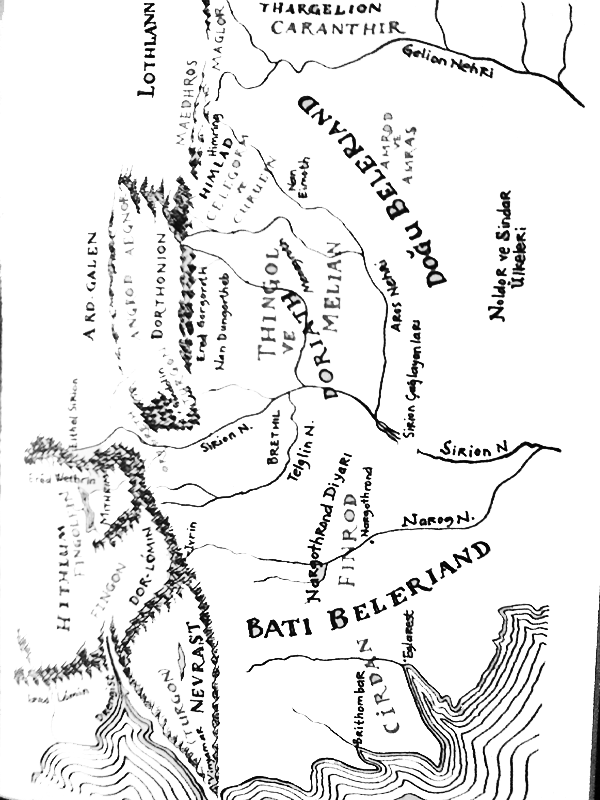

Sonra Fëanor ayağa kalktı, Manwë'nin huzurunda elini kaldırarak Melkor'u, Dünya'nın Kara Düşmanı, Morgoth diye anarak lanetledi; ve o, bundan sonra Eldar arasında sadece bu isimle anıldı. Ve Manwë'nin çağrılarını da lanetledi, Taniquetile geldiği saati de, öfkesinin ve acısının çılgınlığı içinde düşünmüştü ki, Formenos'ta olsaydı katledilse bile gücü daha faydalı olabilirdi ve Melkor'un da amaçladığı buydu. Sonra Fëanor, Hüküm Çemberi'nden ayrılıp geceye karıştı; Çünkü onun için babası, Valinor Işığı'ndan ya da ellerinden doğan eşsiz çalışmalardan bile değerliydi; Elflerin veya İnsanların oğullarından hangisi babalarına bundan daha çok değer vermiştir?
Oradakilerin birçokları Fëanor'un acısına üzüldü, ama kaybı sadece ona ait değildi; Karanlık'ın sonsuza dek Valinor Işığı'nın son ışınlarını da yutacağı korkusuyla Yavanna tepecikte ağlıyordu. Valar, gerçekte başlarına ne geldiğini henüz tam olarak anlayamamıştı, Meikor'un Arda'nın ötesinden yardım aldığını kavradılar. Silmaril'ler gitmişti ve herkes Fëanor'un Yavanna'ya evet mi hayır mı dediğini merak ediyordu; başta, Formenos'tan haber gelmeden önce evet mi demişti, yapılanlar duydukları gibi olmasaydı cevabı öyle olabilirdi. Ama şimdi Noldor'un yazgısı yaklaşıyordu.
Bu arada Morgoth, Araman'ın kıraç topraklarmda Valar'ın takibinden kaçıyordu. Avathar güneyde uzanırken, bu topraklar kuzeyde, Pelöri Dağlan ile Büyük Deniz arasındaydı; ama Araman, sahil ve dağlar arasında Buz'a yaklaştıkça daha da soğuyan çorak düzlüklerden oluşan daha geniş bir bölgeydi. Morgoth ve Ungoliant bu bölgeyi hızla geçip Oiomüre'nin puslan arasından Helcaraxë'ye, Araman ve Orta Dünya arasında gıcırdayan buzlarla dolu boğaza gelip karşıya geçtiler ve sonunda Dış Topraklar'ın kuzeyine döndüler. Birlikte ilerlediler, çünkü Morgoth yakasını Ungoliant'tan kurtaramıyordu, bulutu hâlâ üstlerindeydi ve tüm gözleri onun üzerine dikilmişti; Drengist Haliçi'nin kuzeyinde uzanan topraklara vardılar. Morgoth artık batıdaki güçlü kalesine Angband'ın yıkıntılarına doğru yaklaşıyordu; Ungoliant düşüncesini anladı, orada ondan kaçmak için bir yol aradığını kavradı ve onu durdurup sözünü yerine getirmesini istedi.
"Kara kalpli!" dedi. "Buyruklarını yerine getirdim. Hâlâ açım."
"Daha ne istiyorsun?" dedi Morgöth. "Göbeğin için tüm dünyayı mı arzuluyorsun? Sana bunu vermek için yemin etmemiştim. Ben onun Efendisiyim."
"O kadar değil" dedi Ungoliant. "Ama Formenos'un büyük hazinesi senin değil; hepsi benim olacak. Onu iki elinle vereceksin."
Sonra Morgoth zorunlu olarak yanındaki taşları birer birer, kin güderek ona verdi; ve o hepsini yuttu, taşların güzellikleri yeryüzünden yok oldu. Ungoliant daha da büyüyüp karardı ama hırsı dinme-mişti. "Bir elinle verdin" dedi; "sadece solla. Sağ elini de aç."
Morgoth, kristal bir kutunun içinde kilitli olmalarına rağmen Silmaril'leri sağ elinde sıkıca tuttu, Silmaril'ler onu yakmaya başladı, acıyla elini sıktı; ama açmayacaktı. "Hayır!" dedi. "Sen görevini yerine getirmedin. Sana verdiğim görev benim kudretimle tamamlandı. Sana daha fazla ihtiyacım yok. Bu şeylere ne sahip oldun ne de gördün. Onlar sonsuza kadar benim olacak."
Ama Ungoliant daha da büyümüştü ve Melkor, kendisinden alınan güç yüzünden küçüldü; Melkor'un karşısında yükseldi, bulutuyla onu örttü, boğmak için yapışkan ağlarla sardı. Morgoth dağlarda yankılanan korkunç bir çığlık attı. O yüzden bu andan sonra orası Lammoth diye adlandırıldı; çünkü sesinin yankısı oraya yerleşti ve sonra kim o topraklarda yüksek sesle bağırırsa onları uyandırır, dağlar ve deniz arasında kalan kıraç topraklar acı içindeki seslerle dolardı. Morgoth'un o anki çığlığı kuzey dünyasında duyulan en yüksek ve en korkunç çığlıktı; dağlar sallanıp yer sarsıldı, kayalar parçalara ayrıldı. Unutulmuş yerlerin derinliklerinde de bu çığlık duyuldu. Valar saldırısı aceleyle yapıldığı için Angband'ın en diplerdeki mahzenlere inilmemiş ve orada Balroglar hâlâ gizlenip Efendilerinin dönüşünü bekliyorlardı; hızla yukarıya fırladılar ve bir ateş fırtınası halinde Hithlum'dan geçerek Lammoth'a ulaştılar. Alevli kamçılarıyla Ungoliant'ın ağını paramparça ettiler ve o korktu, üzerini kaplayan kara dumanlar püskürterek kaçtı; oradan uzaklaşarak Beleriand'a inip Ered Gorgofoth'un eteklerinde karanlık bir vadiye yerleşti ve o andan itibaren orada doğurduğu dehşet yüzünden oraya Korkunç Ölüm Vadisi, Nan Dungortheb dendi. Angband'ın kazıldığı günlerden beri örümcek şeklindeki diğer iğrenç yaratıklar oraya yerleşmişti; Ungoliant onlarla çiftleşti ve onları yedi. Ungoliant'ın oradan ayrılıp, dünyanın unutulmuş güneyine gidişinin ardından dölleri orada kaldı ve çirkin ağlarını ördüler. Ungoliant'ın yazgısını anlatan hiçbir hikâye yok. Ancak bazıları uzun zaman önce çok büyük bir kıtlıkta sonunda kendini yiyip yok ettiğini söyler.
Böylece Yavanna'nın Silmaril'lerin yutulup, boşluğa yuvarlanacakları hakkındaki korkusu gerçekleşmedi; ama Morgoth'un elinde kaldılar. Morgoth, özgürlüğüne ulaştığında, yeniden bulabildiği tüm hizmetkârlarını toplayıp Angband yıkıntılarına geldi. Orada büyük mahzenlerini ve zindanlarını yeniden kazdı, kapılarının üzerine Thangorodrim'in üç katlı zirvelerini yükseltti ve o günden beri tepelerinden kapkara pis kokulu bir duman yükseldi. Sayısız canavar, ifrit ve Ork orduları yetiştirdi, orada döllenip büyüdüler ve toprağın derinliklerincie çoğaldılar. Daha sonra anlatılacağı gibi karanlık Beleriand'ın üzerine bir gölge gibi çöktü; Morgoth, Angband'da kendisi için demirden büyük bir taç yapıp kendini Dünya'nın Kralı diye adlandırdı. Bunun simgesi olarak da tacına Silmaril'leri yerleştirdi. Bu kutlu mücevherlere dokunduğunda elleri yanıp karardı ve hep öyle kaldı; ne yanığın acısından ne de acının kızgınlığından asla kurtulamadı. Ağırlığı ölümcül bir yorgunluğa sebep verse de tacı başından hiç çıkartmadı. Yalnızca bir kez kuzeydeki topraklarından gizlice ayrılırken çıkarttı; aslında kalesinin derinliklerinden nadiren ayrılır, ordulanqı kuzeydeki tahtından yönetirdi. Sadece bir kez, o da hükümdarlığı sona ererken eline silah aldı.
Şimdi Utumno günlerinden daha gururluydu, nefreti onu yavaş yavaş yuttu, hizmetkârlarına egemen olmak, onları kötülüğün şehvetiyle lıarekete geçirmek için ruhunu tüketti. Yine de bir Vala olduğu için ılehşete dönüşen heybetini uzun süre korudu ve yüzünün önünde en kudretlisi dışında hepsi korkunun karanlık çukuruna düştü.
Morgoth'un Valinor'dan kaçışı öğrenildiğinde kovalamanın anlamı yoktu ve Valar karanlıkta Hüküm Çemberi'nde uzun süre oturdu, Malar ve Vanyar yanında durup ağladılar; ama Noldor'un büyük bölümü Tirion'a dönerek güzel şenirlerinin kararışı için yas tuttu. Gölgelenmiş denizden sürüklenen pus Calacirya'nın loş koyaklarından yükselerek kulelerini kapladı, Mindon'un ışıltısı kasvet içinde soluklaştı.
Sonra ansızın Fëanor şehirde belirip herkesi Túna'nın üstündeki Kralın yüce meydanında toplanmaya çağırdı; üzerindeki sürgün hükmü henüz kalkmamış, böylece Valar'a karşı gelmişti. Büyük bir kalabalık ne söyleyeceğini duymak için hızla toplandı; tepe, tüm merdivenler ve caddeler, tepeye tırmananların ellerindeki sayısız meşaleyle aydınlandı. Fëanor, sözcüklerin efendisiydi, onları kullandığında dili kalpler üzerine çok güçlü olurdu; o gece Noldor'un huzurunda daima hatırlanacak bir konuşma yaptı. Sözcükleri şiddetli ve yıkıcıydı, kızgınlık ve gurur doluydu; onu dinleyen Noldor çılgınca hareketlendi. Öfkesi ve gazabı daha çok Morgoth'a yönelikti, söylediği hemen her şey Morgoth'un yalanlarından türüyordu; babasının katledilmesi ve Silmaril'lerin çalınması yüzünden kederden çılgın gibiydi. Şimdi Finwë öldüğü için Noldor krallığı üzerinde hak iddia ediyor, Valar hükümlerini küçümsüyordu.
"Neden, Ey Noldor halkı," diye bağırdı, "neden bizi koruyamayan, hatta kendi topraklarını bile Düşman'ına karşı koruyamayan kıskanç Valar'a hizmete devam edelim? O, düşmanlari'olduğu halde, akrabaları değil mi? İntikam, bu yüzden beni çağırdı, ama öyle olsa bile, bundan sonra babamın katili ve hazinemin hırsızının akrabalarıyla aynı topraklar üzerinde yaşamayacağım. Bu cesur halk arasındaki tek cesur ben değilim. Hepiniz Kralınızı kaybetmediniz mi? Kaybedecek daha neyiniz var ki dağlar ve deniz arasındaki bu dar toprağa tıkılıyorsunuz?
"Bir zamanlar burada Valar'ın Orta Dünya'dan esirgediği ışık vardı ama şimdi karanlık her yere yayıldı. Pusun tacizine uğrayan ve nankör denize boşuna gözyaşı döken gölgelenmiş bir halk olarak sonsuza dek burada kıpırdamadan yas mı tutacağız? Yoksa yurdumuza mı döneceğiz? Özgür halkın yürüdüğü Cuiviénen'de, bulutsuz yıldızların altında tatlı sular akıyor, geniş toprakları "etrafa uzanıyor. Hepsi orada, delilik ederek terk ettiğimiz her şey orada hâlâ bizi bekliyor. Gelin dönelim! Bırakın bu şehri korkaklar korusun!"
Uzun süre konuşup kendisini izlemeleri için, çok geç olmadan yiğitlikleriyle özgürlüklerini ve Doğu'daki topraklarda krallıklar ele geçirebileceklerini söyleyerek Noldor'u yüreklendirdi; Valar'ın onları aldatıp esirleştirdiği, böylece Orta Dünya'yı İnsanların yöneteceği hakkındaki Melkor'un yalanlarını yineledi. Eldar'ın çoğu Sonragelenleri ilk kez duyuyordu. "Güzellik en sonunda olacak" diye bağırdı, "uzun ve zor bir yol olsa da! Esarete veda edin! Ama huzura da veda edin! Zayıflığa veda edin! Hazinelerinize veda edin! Daha çok şey yapacağız. Yolculuk hafif: ama kılıçlarınızı yanınızda getirin! Oromë'nin gittiğinden daha ilerilere gideceğiz, Tulkas'tan daha fazla dayanacağız: kovalamamızdan asla vazgeçmeyeceğiz. İMorgoth'un peşinden Dünya'nın sonuna kadar gideceğiz! Onunla savaşacağız, ölümsüz bir nefret duyacağız. Fetihlerimizi gerçekleştirdiğimizde ve Silmaril'leri geri aldığımızda, biz, sadece biz, lekesiz Işığın kralları, mutluluğun efendileri ve Arda'nın güzelliği olacağız. Başka hiçbir ırk bizi kovamayacak!"
Sonra Fëanor korkunç bir yemin etti. Yedi oğlu da yanında diz çöküp hep birlikte aynı andı içti ve meşalelerin ışığı çektikleri kılıçlarda kan gibi kıpkırmızı parıldadı. Yeminlerini bozmayacaklarına Ilúvatar adına and içtiler, eğer bozarlarsa üzerlerine Ebedi Karanlık'ın çökeceğini Söylediler; onları isimlendiren Manwë'nin, Varda'nın ve Taniquetil'in kutsanmış dağının tanıklığında, takiplerini intikam duygusu ve nefretle Dünya'nın sonuna dek sürdüreceklerine, Vala, İfrit, Elf, henüz doğmasa bile İnsan, küçük veya büyük, iyi ya da kötü başka bir yaratık, her ne olursa, sahip oldukları Silmaril'leri ellerinden alıp koruyacaklarına dair yemin ettiler.
Noldor prensleri Maedhros, Maglor, Celegorm, Curufin, Caranthir, Amrod ve Amras konuştu; çoğu bu dehşetli sözleri işitmekten ürkmüştü. İyi ve kötü, yeminin asla bozulmayacağı üzerine and içtiler ki yemin ona sadık kalanı veya bozanı dünyanın sonuna dek izleyecekti. Fingolfin ve oğlu Turgon, Fëanor'a karşı konuştular, keskin sözcükler uyandı ve öfke kılıçların sırtına dek yaklaştı. Ama Finarfin âdeti olduğu gibi yumuşak konuştu, Noldor'u sakinleştirmeye, bekleyip yapılacak ve yapılamayacak işleri düşünüp taşınmaya ikna etmeye çalıştı; oğullarından sadece, Orodreth aynı şekilde konuştu. Finrod, arkadaşı Turgon'un yanındaydı; ama Galadriel, Noldor soyluları arasındaki tek kadın, o gün çekişen prenslerin arasında uzun boyuyla, cesurca dikiliyor, gitmek için can atıyordu. Yemin etmedi ama, Fëanor'un Orta Dünya'yla ilgili sözleri onun kalbindekilerle aynıydı, geniş korunmasız toprakları görmek, kendi iradesiyle yönetebileceği bir krallık yaratmak istiyordu. Galadriel ile aynı düşüncede olan Fingolfın'in oğlu Fingon da, aslında onu çok az sevse de Fëanor'un sözlerinden etkilenmişti; Finarfın'in oğulları Angrod ve Aegnor her zaman olduğu gibi Fingon'un yanında yer aldılar. Ama sessizliklerini koruyup babalarına karşı konuşmadılar.
Uzun bir tartışmanın ardından Fëanor baskın çıktı ve Noldor'un büyük bölümü, değişik şeylere ve garip ülkelere duyduğu arzunun ateşiyle tutuşarak bir araya toplandı. Böylece Finarfin dikkatli olma ve bekleme üzerine konuşurken, çoğu "Hayır, haydi gidelim!" diye bağırdı. Fëanor ve oğulları yolculuk için hazırlıklara başladılar.
Böylesine karanlık bir yola çıkmayı göze alanlar biraz tedbirli olmalıdır. Her şey çok hızlı olmuştu; çünkü Fëanor onları sürüklemişti ve şimdi soğuyan kalplerinde onun korkuyu yenen sözleri etkisini yitiriyor, başka düşünceler baskın çıkmaya başlıyordu; ve Fëanor, tüm gururlu sözlerine karşın Valar'ın kudretini unutmamıştı. Ama Val-mar'dan hiçbir çağrı gelmedi, Manwë suskundu. Fëanor'un amacını henüz yasaklayıp engellemeyecekti; çünkü Valar, Eldar'ın onları kötülükle suçlamasından incinmişti ya da onları iradelerine karşı zaptetmeyeceklerdi. Şirndi izliyor ve bekliyorlardı, çünkü Noldor halkının Fëanor'un arzusuna uyacağına hâlâ inanmıyorlardı.
Ve gerçekten de Fëanor yola çıkmak için Noldor'u düzenlemeye başladığında anlaşmazlık çıktı. Toplananları gitmeye ikna etmesine rağmen Fëanor'un Kral olması konusunda ortak bir karar yoktu. Fin-golfın ve oğullan daha çok seviliyordu; onların ev halkı ve Tirion sakinlerinin büyük bir bölümü eğer Fëanor onlarla giderse onu tanımayı reddetti; böylece sonunda bu acılı yola çıkarken Noldor halkı ikiye bölündü. Fëanor ve onu izleyenler öncü olacak, ama daha büyük bir topluluk arkadan Fingolfin'in yönetiminde gelecekti; ve o bilgeliğine rağmen onlarla gidiyordu, çünkü oğlu Fingon çok ısrar etmişti, çünkü ne gitmeye can atan halkından ayrılmak ne de onları Fëanor'un ihtiyatsız düşüncelerine terk etmek istiyordu. Ne de Manwë'nin tahtının huzurunda ettiği yemini unutmuştu. Finarfin de Fingolfın ile aynı nedenler yüzünden gidiyordu; ama bu gidişe çok daha gönülsüzdü. Valinor'daki Noldor artık çoğalıp koca bir ulus olmuşlardı ama onda biri yola çıkmayı reddetmişti: bazıları Valar'a duyduğu sevgi (en azından Aulë'ye), bazıları da Tirion'a ve orada ürettiklerine duydukları sevgi yüzünden kalacaktı; ama asla yolun getirdiği tehlikeden korktukları için değil.
Borular çalınıp Fëanor, Tirion kapılarından çıkarken sonunda Manwë'nin habercisi geldi ve dedi ki: "Fëanor'un çılgınlıklarına karşı tek 'sözüm var. İleri gitmeyin! Zaman kötülüğün zamanıdır ve yolunuz sizi önceden göremediğiniz kederlere yöneltecek. Bu macerada Valar'ın size yardımı olmayacak; ama size engel de olunmayacak; şunu bilmelisiniz: buraya özgürce geldiniz ve özgürce ayrılacaksınız. Ama sen Finwë oğlu l'eanor, senin yeminin hünerle çarpıtıldı. Sen çektiğin acının içindeyken Melkor'un yalanlarını anlayamadın. O bir Vala'dır, sen değilsin. Aceleyle boşuna yemin ettin, çünkü hiçbir Vala'yı, Eä içinde bile yenemezsin, seni adlandıran Eru, seni marifetinden daha fazla kutsamadı."
Fëanor güldü, haberciye değil Noldor'a bakarak konuştu ve dedi ki: "Yani! Bu cesur insanlar Krallarının varisini, oğullarıyla birlikte sürgüne gönderip tutsaklıklarına mı dönecekler? Eğer benimle gelecek varsa, onlara söylüyorum: İçinizde kederin öngörüsü var mı? Ama onu Aman'da gördük. Biz Aman'da mutluluktan acıya ulaştık. Şimdi başka bir şey deneyeceğiz: kederden neşeye, en azından özgürlüğe ulaşacağız."
Sonra haberciye dönüp haykırdı: "Súlimo Manwë'ye, Arda'nın Yüce Kralı'na şunu söyle: Eğer Fëanor, Morgoth'u yenemezse veya en azından ona saldırmayı ertelerse, keder içinde tembelce oturamaz. Belki benim içime senin bildiğinden daha büyük bir ateş yerleştiren Eru'dur. Valar Düşmanı'na vereceğim acıyı duymayı Hüküm Çemberi'ndeki kudretliler bile merakla bekler. Evet, sonuçta,onlar beni izleyecek. Elveda!"
O an Fëanor'un sesi öyle büyüdü, öyle güçlendi ki Valar habercisi yanıtı tamamlandığında önünde eğilip oradan ayrıldı; ve Noldor etkilendi. Böylece 'yürüyüşlerine devam ettiler; önlerinde Fëanor Hanedanı olarak Elende kıyıları boyunca hızla ilerlendi: bir kez bile yeşil Túna'nın üzerindeki Tirion'a dönüp bakmadılar. Onları Fingolfın'in topluluğu daha yavaş ve isteksiz olarak, izliyordu. Fingon'un grubu öndeydi; Finarfin,'Finrod ve Noldor'un asillerinin, bilgelerinin çoğu en geriden geliyordu; sık sık arkalarına dönüp güzel şehirlerinp bakı-yorlardı, Mindon Eldalieva'nın ışıltısı karanlığın içinde kaybolana dek. Geride bırakıp gittikleri eski mutluluk' anıktım diğer Sürgünler'den daha fazla yanlarında götürüyordu, bazıları orada yaptıkları şeyleri bile yanlarına almışlardı: bir avuntu, yol için bir yük.
Fëanor, şimdi Noldor'u kuzeye doğru yöneltti, çünkü ilk hedefi Morgoth'u izlemekti. İlerledikçe Taniquetil'in altındaki Túna, Arda'nın yüzeyine daha da yaklaşıyordu ve orada Büyük Deniz ölçülemeyecek kadar engindi, oysa kuzeye doğru, Araman'ın kıraç topraklarının Orta Dünya'nın kıyılarıyla birlikte uzandığı yerlerde ayıran denizler daralıyordu. Ama Fëanor'un düşünceleri sakinleştikçe geç olsa da anlıyordu ki, yanındaki büyük topluluklar ne kuzeye doğru giden uzun fersahları geçebilecek ne de sonunda gemilerin yardımı olmadan denizleri aşabilecekti; büyük bir filo kurmak da uzun ve zahmetli bir işti, Nol-ılor arasında bu zanaatta yetenekli kimse de yoktu. Bu durumu Noldor'un daima dostu olmuş Teleri'yi onlara katılmaya ikna ederek çözmeyi düşündü; onların isyanıyla Valinor'un mutluluğu biraz daha solacak, Morgoth'a karşı savaşında daha da güçlenecekti. Böylece Alqualondë'ye doğru hızlandı ve Teleri halkıyla Tirion'da yaptığı gibi konuştu.
Ama Teleri halkı söyleyecek hiçbir şeyleri olmadan kıpırdamadan ıkırdu. Akrabalarının ve eski dostlarının gidişlerine gerçekten çok üzülüyorlardı ama onlara yardırn etmektense, caydırmayı tercih ettiler; Valar'ın arzusunun dışında ne ödünç verecek gemileri vardı ne de ınşaasına yardım edeceklerdi. Eldamar kıyılarından başka yurt, Alqualondë prensi Olwë'den başka efendi istemiyorlardı. Ve o, ne Morgoth'u,dinlemiş ne de onu topraklarında ağırlamıştı, hâlâ Ulmo'ya güveniyordu, Valar arasındaki diğer uluların Morgoth'un acılarını ıliizelteceğine de; ve gece yeni bir şafağa dönüşerek geçiyordu.
O zaman Fëanor öfkelendi, çünkü hâlâ gecikmekten korkuyordu; ve Olwë'ye ateşli bir şekilde konuştu. "İhtiyacımız olduğu anda dostluğumuzu tanımadın. Oysa, yüreksiz aylaklar olarak, neredeyse bomboş eninde sonunda bu kıyılara geldiğinizde bizden aldığınız yardım için mutluydunuz. Hâlâ bu kıyılardaki kulübelerinizde yaşıyorsunuz. Limanınızı oyan, duvarlarınız üzerinde yorulanlar Noldor değildi."
Ve Olwë yanıtladı: "Dostluğu inkâr etmedik. Ama dostunun çılgınlığını engellemek dostluğun bir parçası olabilir. Noldor bize kucak açıp bize yardım ettiğinde sen şöyle demiştin: evleri yan yana duran kardeşler olarak sonsuza dek Aman topraklarında yerleşeceğiz. Ama ak gemilerimizi siz vermediniz. Bu zanaatı Noldor'dan öğrenmedik, Denizlerin Efendisi'nden öğrendik; ak keresteleri kendi ellerimizle işledik, ak yelkenlerimizi karılarımız, kızlarımız dokudu. Bu yüzden onları herhangi bir ittifak veya dostluk için ne veririz ne de satarız. Finwé oğlu Fëanor, sana söyleyeceğim, onlar bizim için Noldor mücevherleri gibidir; yüreklerimizin ürünü, yeniden yapamayacağımız."
Bunun üzerine Fëanor onun yanından ayrıldı ve maiyetindekiler toplanana dek Alqualondë'nin duvarlarının ötesinde karanlıkta düşünerek oturdu. Kuğular Limanı'na gidip orada demirlemiş gemileri zor kullanarak alıp adamlarıyla uzaklaşmak için gücünün yeterli olduğuna hükmetti. Ama Teleri halkı onlara direndi ve pek çok Noldor'u denize döktü. Sonra kılıçlar çekilip gemilerin üzerinde, rıhtım lambalarının ışığında, iskelelerde, hatta kapının büyük kemerinin üzerinde çok sert. bir savaş yapıldı. Fëanor'un halkı üç kez geri püskürtüldü ve her iki tarafın birçok kaybı oldu. Ama Fingolfin'in topluluğun önündeki Bingon, Noldor'un öncü kolunun imdadına yetişti, akrabalarının yenilmekte olduğunu görüp, çarpışmanın nedenini tam anlamadan savaşa katıldılar; bazıları Valar'ın emrine uyarak Noldbr ilerleyişini durdurmak için Teleri'nin pusuya yatıp beklediğini düşünmüştü.
Böylece sonunda Teleri yenildi. Alqualondë'de yaşayan denizcilerinin büyük bir kısmı günahkârca katledildi. Çünkü Noldor vahşileşip umutsuzlaşmıştı ve Teleri'nin gücü azaldı, çoğu hafif yaylarla silahlanmıştı. Böylece Noldor onları ak gemilerinden uzaklaştırıp küreklere ellerinden geldiğince adam yerleştirerek sahil boyunca kuzeye doğru kürek çekmeye başladılar. Olwë, Osse'yi çağırdı ama o gelmedi, çünkü Valar, Noldor'un kaçışının güç kullanılarak engellenmesini istemiyordu. Ama Ulnen, Teleri denizcileri için gözyaşı döktü ve deniz öfkeyle katillere karşı yükseldi, gemilerin çoğu enkaza döndü, içindekiler boğuldular. Alqualondë'deki Akrabakıyımı hakkında daha fazla şey Maglor'un kaybolmadan önce yazdığı Noldor'un Çöküşü, Noldolantë diye adlandırılan ağıtta anlatılır.
Her nasılsa Noldor'un büyük bir kısmı kaçmıştı ve fırtına dinince bazıları gemiyle, bazıları karadan gelerek bir araya toplandı; ama yol uzundu ve ilerledikçe daha kötüleşiyordu. Uzunluğu ölçülemeyen bir gece boyunca uzun süre ilerledikten sonra Araman'ın dağlık, soğuk, ıssız ve kıraç topraklarının üzerinden Korunan Diyar'ın kuzey sınırlarına ulaştılar. Ansızın yüksek bir kayanın üzerinde duran ve aşağıya, sahile bakan karanlık bir şekil gördüler. Bazıları onun Mandos'un kendisi olduğunu söyler, Manwë'nin daha düşük seviyeli habercisi değil. Sonra onların durup dinlemelerini emireden vakur ve korkunç bir ses duydular. Hepsi durup sessizce bekledi ve başından sonuna kadar tüm Noldor orduları, bu sesin söylediği Kuzey'in Kehaneti ve Noldor'un Kadersizliği diye adlandırılan laneti ve kehaneti duydu. Onun çoğu Noldor'un aslında başlarına gelmeden anlayamayacakları kederi, kara sözcüklerle önceden haber veriyordu; ne alıkonulacak ne de yazgılarına ulaşacakve Valar'ın affı için uğraşacaklardı, söylenen lanet buydu.
"Sayısız gözyaşı dökeceksiniz. Valar, Valinor'u size karşı kapatacak ve sizi dışarıda bırakacak, böylece ağıtınızın yankısı bile dağları aşamayacak. Valar'ın gazabı Batı'dan Doğu'nun en ucuna dek Fëanor hanedanı üzerinde yayılacak, onları izleyenlerin de üzerlerine yayılacak. Yeminleri onları sürükleyecek, onlara ihanet edecek, izlemeye ant içtikleri hazineler asla ele geçirilemeyecek. İyi başlayan her şey kötü bitecek; Akrabanın akrabaya ihanetiyle, ihanete uğrama korkusu doğacak. Onlar sonsuza dek Mahrum Edilenler olacak.
"Siz haksız bir şekilde akrabalarınızın kanını döktünüz. Aman topraklarını lekelediniz. Kana karşı kan vereceksiniz ve Aman'ın ötesinde Ölüm'ün gölgesinde yaşayacaksınız. Bunun için Eru sizin Eä'da ölmemenize karar verdi; ve hiçbir hastalık sizi ele geçiremeyecek ama katledilebilirsiniz ve katledileceksiniz: silahla, işkenceyle ve kederle; sonra yurtsuz ruhlarınız Mandos'a gelecek. Orada bedenlerinizi özleyerek bekleyeceksiniz ve katlettikleriniz gelip sizin için yalvarırlarsa biraz merhamet bulabileceksiniz. Orta Dünya'da kalıp Mandos'a dönmeyenler, büyük bir yük taşıyormuşcasına bitkinleşecekler, gittikçe solacaklar ve arkalarından gelecek daha genç ırkın önünde pişmanlık gölgeleri olacaklar. Valar konuştu."
Çoğu korkuyla sindi; ama Fëanor'un yüreği sertleşmişti ve dedi ki; "Biz yemin ettik, bu hafif bir yemin değildi. Pek çok kötülükle ve daha az olmayan ihanetle tehdit edildik; ama bir şey söylenmedi: biz korkaklardan veya korkakların korkusundan gelen korkaklığa katlanacağız. Bu yüzden diyorum ki devam edeceğiz ve, bu yazgıya şunu ekleyeceğim: yapacaklarımız, Arda'nın son günlerine dek şarkılarda anlatılacak."
Ama o anda Finarfın ilerlemekten vazgeçerek, kedere boğulmuş ve Fëanor Hanedanı'na karşı acıyla dolmuş olarak geri döndü, çünkü Alqualondë'li Olwë ile akrabaydı; halkının çoğu da üzüntü içinde, onun adımlarını izleyerek, gece boyunca parlayan Túna'nın üzerindeki Mindon'un uzak ışığını bir kez daha görene dek onunla birlikte yürüdü ve sonunda Valinor'a vardılar. Orada Valar onları bağışladı ve Finarfin, Kutlu Diyar'da kalan Noldor'u yönetmek için görevlendirildi. Ama oğulları onunla birlikte değildi; çünkü Fingolfin'in oğullarını terk etmek istememişlerdi; akrabalık bağlarının Fëanor'un iradesini zorlayışını hissederek ve Valar'ın yazgısıyla yüzleşmenin korkusunu hissederek, çünkü Akrabakıyımı'nda suçsuz değillerdi; Fingolfin'in halkının tamamı ilerledi. Bunun yanında Fingon ve Turgon'un yürekleri cesur ve coşkuluydu, ellerine aldıkları bir işi acı bir sona erdirmeden, durmaya gönüllü değillerdi, eğer acıysa kesinlikle yapılmalıydı. Böylece ana ordu konumunu korudu ve kehanet edilen kötülük işe koyuldu.
Sonunda Noldor, Arda'nın kuzey uçlarına ulaştılar; ve denizde yüzen ilk buz parçasını görerek Helcaraxë'ye yaklaştıklarını anladılar. Kuzeyde doğuya doğru yay yaparak kıvrılan Am.r.ı ve batıya doğru uzanan Endor'un (ki Orta Dünya'dır) doğu kıyıları arasında, Kuşatan Deniz'in soğuk sularının ve Belegaer'in dalgalarının birlikte aktığı dar bir boğaz vardır, orada ölümcül soğuğun engin sisi ve pusu vardır, denizin akıntıları çarpışan buz tepeleriyie, derinlere batmış buzların gıcırdamalanyla doludur. İşte Helcaraxë böyle bir yerdi, Valar ve Ungoliant dışında kimse buraya ayak basmaya cesaret edememişti.
Fëanor bu yüzden duraksadı ve Noldor artık hangi yoldan gideceklerini tartışmaya başladı. Şiddetli soğuktan ve hiçbir yıldız ışıltısının sızamadığı yapış yapış pustan acı çekmeye başladılar, çoğu yola çıktığına pişmandı, homurdanmaya başlamışlardı, özellikle Fingolfin'i izleyenler Fëanor'u lanetlemekte, onu Eldar'ın tüm kederinin sorumlusu olarak isimlendirmekteydi. Fëanor söylenen her şeyi bilerek oğullarının fikrini aldı; Araman'dan kaçıp Endor'a ulaşmak için yalnızca , iki yol olduğunu görüyorlardı: boğazlardan veya gemilerle. Ama Helcaraxë'nin geçilmez olduğunu düşünüyorlardı, öte yandan çok az gemileri vardı. Uzun yolculukları boyunca çoğunu kaybetmişlerdi ve arda kalanlar kalabalık halklarını hep birlikte geçirmek için yeterli değildi; ama diğerleri önden batı kıyısına geçerken kalanlar beklemek istemiyordu: Noldor arasında şimdiden ihanet korkusu doğmuştu. Bu yüzden Fëanor ve oğullarının kalbine tüm gemileri gasp edip ansızın kaçma düşüncesi doğdu; Liman savaşından beri filoların hakimiyetini ellerinde tutuyorlardı, gemiler sadece orada savaşanlarla donatılmıştı ve onlar Fëanor'a bağlıydı. Çağrısı üzerine geldiler, kuzeybatıdan bir rüzgâr esmeye başladı, Fëanor doğru olduğunu düşündüğü kişilerle gizlice uzaklaşıp denize açıldı ve Fingolfın'i Araman'da bıraktı. Deniz burada daraldığı için dümeni doğuya, biraz da güneye döndürüp hiç kayıp vermeden geçti ve Noldor bir kez daha Orta Dünya'nın kıyılarına ayak bastı; Fëanor'un çıktığı yer, Dor-ló-min'e doğru giren bir Haliçin ağzıydı, oraya Drengist denildi.
Karaya ayak bastıklarında, Morgoth'un yalanları araya girmeden önce Fingon'un arkadaşı olan en büyük oğlu Maedhros, Fëanorİa ko-I nuştu ve dedi ki: "Flangi gemileri ve kürekçileri dönmek için ayırdın? Önce kimleri taşıyacaklar? Cesur Fingon'u mu?"
Fëanor delirmiş biri gibi güldü ve bağırdı:."Hiçbirini, hiçbirini! Ardımda bıraktıklarımı kayıp saymıyorum; yolda gereksiz yük oldukları kanıtlandı. Onlar adımı lanetledi, hâlâ lanetliyorlar ve bırak Valar'ın kafeslerine inleyerek dönsünler! Gemileri yakın!" Sadece Maedhros karışmadan kenarda durdu, ama Fëanor ak Teleri gemilerini ateşe verdi. Bu yüzden, Drengist Haliçi'nin ağzında, denize açılmış en güzel gemilerin parıldayarak korkunç bir şekilde yandığı bu yere Losgar adı verildi. Fingolfin ve halkı uzaktan, bulutların altındaki kırmızı ışığı gördüler; ihanete uğradıklarını anladılar. Bu, Akrabakıyımı'nın ve Noldor Kadersizliği'nin ilk meyveleriydi.
Fingolfın, Fëanor'un kendisini Araman'da yok olmaya ya da utanç içinde Valinor'a dönmeye terk ettiğini görerek acıyla doldu; ama şimdi Orta Dünya'ya geçmeyi ve Fëanor'la karşılaşmayı eskisinden daha fazla arzuluyordu. O ve halkı uzun süre sefalet içinde dolaştı, ama cesaretleri ve sabırları güçlendi; çünkü onlar kudretli bir halktı, Ilúvatar Eru'nun ölümsüz ilk çocukları. Kutlu Diyar'dan yeni gelmişlerdi ve henüz Dünya'nın yorgunluğuyla tükenmemişlerdi. Kalplerindeki ateş tazeydi, Fingolfin ve oğulları, Finrod ve Galadriel tarafından yönetilerek, en acı verici Kuzey'e geçmeye cesaret ettiler; Helcaraxë'nin dehşetine ve zalim buz dağlarına dayanmanın başka bir yolu yoktu. Ancak çok az Noldor uğraşı, yiğitlik ve kederde bu umutsuz geçişi aşacaktı. Orada Turgon'un karısı ELenwë kayboldu, birçoğu da öldü; sonunda Fingolfın azalan topluluğuyla birlikte Dış Topraklarca ayak bastı. Fëanor ve oğullarına çok az sevgi duyarak peşlerinden yürüdüler, Orta Dünya'da Ay'ın ilk yükselişinde borularını üflediler.
Denir ki, Orta Dünya'da Elwë ve Melian'ın güçleri çoğalmış, Círdan'ın denizcilerinden Gelion Nehri'nin ötesindeki Mavi Dağlar'ın gezgin avcılarına kadar tüm Beleriand'lı Elfler, Elwë'yi efendileri olarak kabul etmişler; halkının dilinde ona Kral Gri Pelerin, Elu Thingol denmiş. Halkına ise yıldızlarla aydınlanan Beleriand'ın Gri Elfleri, Sindar; Moriquendi arasında sayılsalar da Thingol'ün hükümdarlığı, Melian'ın öğretisi altında Orta Dünya'nın tüm Elflerinin en bilgeleri ve beceriklileri oldular. Melkor'un Zincirlenişi'nin ilk çağının sonunda, tüm dünyada barış varken, Valinor'un görkemi doruk dönemini yaşarken, Thingol ve Melian'ın tek çocuğu Lúthien dünyaya geldi. Orta Dünya'nın büyük bölümü Yavanna'nın Uykusu'ndaydı ama Melian'ın kudreti sayesinde Beleriand'ta yaşam ve mutluluk vardı, parlak yıldızlar gümüş alevler gibi parlardı; ve Neldoreth ormanında Lúthien doğdu, ak çiçekler, niphredil onu karşılamak için topraktan çıkan yıldızlar gibi açtı.
Cüceler, Melkor'un esaretinin ikinci çağında Mavi Dağlar'ın, Ered Luin, üzerinden geçerek Beleriand'a girmişler. Kendilerine Khazâd diyorlarmış ama Gri Elfler onlara Bodur Bırakılan Halk, Naugrim ve 'aşın Efendileri, Gonnhirrim adını vermiş. Naugrim'in kadim yurtları doğunun uzaklarındaymış, Ered Luin'in doğu tarafında, kendi tarzlarında koca salonlar ve konaklar oymuşlar; ve bu şehirleri kendi dillerinde Gabilgathol ve Tumunzahar diye isimlendirmişler. Dolmed Dağı'nın zirvelerinin kuzeyinde. Elflerin kendi dillerinde Belegost, yani Kocakasaba diye yorumladıkları Gabilgathol varmış; ve sol tarafında Tumunzahar, Elflerin Nogrod dedikleri, Oyukkent varmış. Cücelerin tüm konaklarının en büyüğü Khazzad-dûm, Cücegazuv, Elf dilinde Hadhodrond'muş, daha sonraları, karanlığının günlerinde ona Morla adı verilmiş; Eriador'un uzun fersahlarının ötesinde, uzaklarda. Puslu Dağlar'daymış; ve Eldar için Mavi Dağlar'ın Cüceleri'nin sözlerinden kaynaklanan bir isim, bir söylenti gibiymiş.
Naugrim, Beleriand'a Nogrod ve Belegost'tan gelmişler; ve Elfler büyük şaşkınlık yaşamış, çünkü kendilerinin Orta Dünya'nın sözcüklerle konuşan ve elleriyle çalışan tek canlıları olduklarına, geri kalan her şeyin kuşlar ve hayvanlar olduklarına inanıyorlarraış. Kulaklarına sıkıcı ve sevimsiz gelen Naugrim dilinden tek kelime anlamıyorlarmış; çok az Eldar bu dil üzerinde hâkimiyet kurabilmiş. Ama Cüceler öğrenmekte hızlıymışlar; hatta yabancı bir ırktan olanlara kendi dillerini öğretmektense Elf dilini öğrenmeye daha çok istekliymişler. Eldar arasında Nan Elmoth'lu Eöl ve oğlu Maeglin dışında, Nogrod ve Belegost'a giden olmamış; ama Cüceler Beleriand'a doğru akmışlar, Dolmed Dağı'nın yamaçlarının altından geçip Ascar nehrinin akışını izleyerek, daha sonra bir savaşın olacağı Taşlar Sığlığı'nda, Sarn Athrad, Gelion Nehri'ni geçen bir yol yaratmışlar. Naugrim ve Eldar arasındaki ilişki, birinin diğerinden pek çok çıkarı olmasına rağmen daima soğuk kalacaktır; o zamanlar aralarına uzanan kederler henüz yokmuş ve Kral Thingol onları hoş karşılamış. Sonraki günlerdeyse, Aulë'ye duydukları sevgi ve saygı yüzünden Cüceler, dostluklarını tüm Elf ve İnsanlar arasında en rahat şekilde Noldor'a sunmuşlar; Noldor'un değerli! taşlarını diğer tüm zenginliklerin üzerinde takdir etmişler. Arda'nın karanlık günlerinden itibaren Cüceler çok büyük eserler ortaya koymaya başlamışlardı, daha Babaları'nın ilk günlerinden beri metale ve taşa karşı büyük becerileri varmış; ama o kadim zamanlarda gümüş ve altından çok, demir ve bakırla çalışmayı seviyorlarmış.
Melian'ın bir Maiar olduğu için öngörüsü çok güçlüymüş; ve Melkor'un esaretinin ikinci çağı geçtikten sonra Thingol'e, Arda Huzuru'nun sonsuza dek sürmeyeceğini öğütlemiş. Bu yüzden Thingol, Orı Dünya'da kötülük yeniden uyanırsa, kendisine krallara yaraşır bir şekilde, güçlü olması gereken bir mekân yapmak için düşünmeye başlamış; ve Belegost Cüceleri'nin yardımına ve öğütlerine başvurmuş. Onlar da bu işi severek yapmışlar, çünkü o günlerde yorgun değillermiş ve yeni işler yapmayı arzuluyorlarmış; ve Cüceler, keyifle ya da eziyetle yapsalar da, ürettikleri her şeyin karşılığında daima bir ücret talep ettikleri halde, bu kez kendilerini ödeşmiş sayıp, bir şey istememişler. Çünkü Melian, öğrenmeye hevesli oldukları pek çok şeyi öğretmiş, Thingol de onları birçok güzel inciyle ödüllendirmiş. Onları Thingol'e Círdan vermişti; çünkü Balar Adası civarındaki sığ sularda onlardan çok sayıda elde etmişlerdi; ama Naugrim daha önce onlara benzer şeyleri hiç görmemişti ve onları çok sevdiler. İçlerinden biri varmış ki güvercin yumurtası kadar büyükmüş ve parıltısı deniz köpüklerinin üzerindeki yıldız ışığı gibiymiş; adına Nimphelos denmiş, Belegost Cüceleri'nin efendisi, una bir dağ dolusu servetten daha çok değer biçiyormuş,
Naugrim, bu yüzden Thingol için uzun süre ve memnuniyetle emek vermişler; kendi tarzlarında, dünyanın derinliklerine oyulmuş konaklar yapmışlar. Esgalduin'in aşağılara akıp, Neldoreth'i Region'dan ayırdığı yerde, ormanın ortasında kayalık bir tepe yükseliyor ve nehir onun ereklerinden akıyormuş. Thingol'ün salonlarının kapılarını oraya yapmışlar, kapıların tek girişi olarak nehrin üzerine taş bir köprü inşa etmişler. Kapıların ardında, kayaya oyulmuş geniş salonlara, derinlerdeki odalara öyle çok, öyle geniş dehlizler iniyormuş ki orası Bin Mağara, Menegroth, diye isimlendirilmiş.
Ama verilen emekte Elflerin de payı varmış, Elfler ve Cüceler birlikte, kendi becerileri dahilinde, orada Melian'ın görüsünü, Deniz'in ötesindeki Valinor'un harikalarının ve güzelliklerinin görüntülerini işlemişler. Menegroth'un sütunları Oromë'nin kayınlarına gövde, dal ve yaprakta benzer yaratılmış, altın fenerlerle aydınlatılmış. Bülbüller orada sanki Lórien bahçelerindelermiş gibi şarkılar söylemişler; gümüş çeşmeler, mermer havuzlar ve renkli taşlardan döşemeler varmış. Duvarların üstünde, sütunların tepesinde birçok çiçekle bezenmiş dalların arasına serpilmiş hayvanlar ve kuşlar oyulmuş. Yıllar geçtikçe Melian ve kızları salonları, Valar'ın yaptıklarının, başlangıçtan itibaren Arda'da olanların ve olacak şeylerin izlerinin okunabileceği dokumalarla doldurmuşlar. Deniz'in doğusunda şimdiye dek var olmuş kral konaklarının en güzeliymiş.
Menegroth'un yapımı tamamlandığında, Thingol ve Melian'ın diyarında huzur varken, Cüceler hiç durmadan sürekli olarak dağların üzerinden büyük kalabalıklar halinde gelmişler; ama Falas'a çok ender gitmişler; çünkü denizin sesinden nefret ediyor, ona bakmaya korkuyorlar-mış. Dış dünyadan Beleriand'a hiçbir söylenti veya haber gelmemiş.
Ama Melkor'un esaretinin üçüncü çağı yaklaştıkça Cüceler üzülmeye başlamışlar; Kral Thingol'e, Valar'ın Kuzey'in kötülüklerinin kökünü tam kazımadığını, şimdi onlardan arda kalanların uzun yıllar boyunca karanlıkta çoğalmalarıyla birlikte yeniden ortaya çıktıklarını ve her yerde kükrediklerini anlatmışlar. "Korkunç hayvanlar var," demişler, "dağların doğusundaki topraklarda ve sizin oralara yerleşmiş' kadim akrabalarınız düzlüklerden tepelere kaçıyor."
Çok geçmeden kötü yaratıklar, dağlardaki geçitlerden ya da güneyden, karanlık ormanların içinden geçerek Beleriand'a gelmişler. Kurtlar varmış ya da kurt suretine bürünen yaratıklar, gölgenin başka korkunç yaratıkları; ve aralarında zaman içinde Beleriand'ın yıkımında rol oynayacak Orklar da varmış: ama sayıları azmış ve ihtiyatlı davranıp yolları koklayarak efendilerinin dönüşünü bekliyorlarmış. Nereden geldiklerini ya da ne olduklarını o zamanlar Elfler bilmiyormuş, denildiğine göre bu konuda yapabildikleri en iyi tahmin, onların belki de yabanda kötüleşip vahşileşen Avari oldukları düşüncesiymiş.
Bu yüzden Thingol daha önce halkının ihtiyaç duymadığı silahlar düşünmeye başlamış ve ilk başta bunları ona Naugrim üretmiş, çünkü böyle işlerde çok becerikliymişler; her ne kadar hiçbiri, aralarında en şöhretlisinin demirci Telchar olduğu Nogrod zanaatkarlarını geçememiş olsa da. Naugrim eskiden beri savaşçı bir ırkmış, onları inciten herkese karşı şiddetle savaşırlarmış: Melkor'un hizmetkârları, Eldar, Avari, vahşi hayvanlar ya da nadiren de olsa başka efendilerin veya konakların Cücelerine, kendi soydaşlarına karşı. Sindar, çok geçmeden demircilik zaanatlarını onlardan öğreneceklerdi; ama yine de tüm zanaatlar arasında, yalnızca çeliğin tavlanmasında Cücelere asla rakip görülmemişlerdir, hatta Noldor bile; ve ilk kez Belegost demircilerinin yarattığı zincir zırhların üretiminde eserlerine rakip yokmuş.
Bu yüzden, o zamanlar Sindar iyi silahlanmış durumdaymış ve kötülüğün tüm yaratıklarını uzaklaştırıp yeniden huzura kavuşmuşlar; Thingol'ün cephanelikleri baltalar, mızraklar, kılıçlar, yüksek miğferler, uzun parlak zırhlarla doluymuş; Cücelerin zırh yelekleri öyle güçlü yapılırmış ki asla paslanmaz ve sanki yeni parlatılmış gibi ışıldarmış. Ve bu gelecek için Thingol'e bir güvence sağlıyormuş.
Daha önce anlatıldığı gibi, Teleri halkı Orta Dünya'nın batı topraklarının sınırını oluşturan Ulu Nehir'in kıyısında durduklarında Olwë'nin topluluğunda olan Lenwë, Eldar yürüyüşünü terk etmişti. Bununla birlikte Anduin boyunca aşağıya gidenlerin, Nandor halkının, yaptıklarına dair çok az şey bilinir: denir ki, bir bölümü Ulu Nehir Vadisi'ndeki ormanlarda bir çağ boyunca yaşamış, bir bölümüyse sonunda onun deltasına gelerek, orada Deniz'in kıyısında yaşamış; diğerleri Ak Dağlar'ı, Ered Nimrais, aşarak yeniden kuzeye dönüp Ered Luin ile uzaklardaki Puslu Dağlar arasında bulunan Eriador'un yabanlarına yerleşmiş. Onlar orman halkıymış, çelikten yapılmış silahları yokmuş ve ' melerin Menegroth'ta Kral Thingol'e açıkladıkları gibi, kuzeyden korkunç hayvanların gelişi onları büyük bir korkuyla doldurmuş. Bu yüzden Lenwë oğlu Denethor, Thingol'ün görkemi ve topraklarındaki huzur üzerine söylentileri duyduğunda dağılmış halkını, yapabildiği kadar toplayıp dağların üzerinden Beleriand'a götürmüş. Orada Thingol tarafından uzun zamandır kayıp akrabaların dönüşü olarak içtenlikle karşılanıp Yedi Nehir Ülkesi'ne, Ossiriand'a yerleşmişler.
Denethor'un gelişinden sonraki uzun barış yılları hakkında çok az hikâye anlatılır. Denir ki, o günlerde, Thingol krallığının ilimefendisi Ozan Daeron kendi Rünlerini tasarlamış; Thingol'e gelen Cüceler onları öğrenmiş ve bu keşif Daeron'un yeteneklerini kendi halkı olan Sindar'dan daha fazla takdir eden onları çok mutlu etmiş. Cirth, Naugrim tarafından dağların üzerinden doğuya götürülmüş ve birçok halkın ilmine aktarılmış ama Savaş günlerine dek Sindar tarafından kayıtların tutulması için çok az kullanılmış, belleklerde tutulan pek çok şey Doriath'ın yıkılması sırasında yitip gitmiş. Ama mutluluk ve refah içindeki yaşama dair, onun bitişinden önce, söylenen çok az şey var; çünkü güzel ve harika olan işler, gözler onları görmeye devam ettiği sürece kendilerinin kayıtlarıdır ve ancak tehlikede oldukları ya da sonsuza dek bozuldukları zaman şarkı haline dönüşürler.
Beleriand'da, o günlerde Elfler geziniyor, nehirler akıyor, yıldızlar ışıldıyor ve gece-çiçekleri etrafı güzel kokularıyla dolduruyorlardı; ve Melian'ın güzelliği gündüz gibiydi; ve Lúthien'in güzelliği baharda gün, doğuşu gibiydi. Beleriand'da tahtının üzerindeki Kral Thingol, Maiar efendileri gibiydi; gücü dinleniyordu, sevinci hayatları boyunca soludukları hava gibiydi, düşüncesi yükseklerden derinlere bir dalga gibi rahatça akıyordu. Ulu Oromë, hâlâ zaman zaman, bir rüzgâr gibi dağların üzerinden aşarak Beleriand'da at biniyor, borusunun sesi yıldız ışığı altındaki uzun fersahları aşarak geliyordu, görünüşünün ihtişamı ve Nahar'ın fırlayışının büyük gürültüsü yüzünden Elfler ondan korktu; ama Valaroma tepelerde yankılandığında, tüm kötü şeylerin uzaklara kaçıştığını iyi biliyorlardı.
Ama mutluluğun sonu yakınlaşmıştı ve Valinor'un doruk dönemi batışına doğru gidiyordu. Çünkü herkesçe söylenip bilindiği gibi, eski bilgilerde yazıldığı, birçok şarkıda söylendiği gibi, Melkor, Valar Ağaçları'nı Ungoliant'ın yardımıyla katletti ve kaçıp Orta Dünya'ya döndü. Morgoth ve Ungoliant'ın mücadelesi Kuzey'de uzaklarda gerçekleşmişti; ama Morgoth'un çığlığı Beleriand boyunca yankılandı ve tüm halk korkudan titredi; hangi uğursuzluğu haber verdiğini bilmemelerine rağmen, sonra ölümü anlatan haberciyi dinlediler. Çok geçmeden Ungoliant kuzeyden kaçarak Kral Thingol'ün ülkesine geldi, etrafında karanlığın dehşeti vardı; ama Melian'ın kudreti tarafından durduruldu ve Neldoreth'e giremedi, ama Dothronion'un güneyindeki uçurumların gölgesi altında uzun süre yaşadı. Ve oralar Dehşet Dağları, Ered Gorgoroth, olarak bilindi, kimse oraya gitmeye ya da yanından geçmeye cesaret edemedi; orada yaşam ve ışık boğulmuş, bütün sulan zehirlenmişti. Morgoth, daha önce anlatıldığı gibi Angband'a dönerek orasını yeniden inşa edip kapılannm üzerine Thangorodrim'in leş kokular yayan zirvelerini yükseltti; Morgoth'un kapılan, Menegroth köprüsünden sadece yüz elli fersah uzaktaydı: uzak ama yine de çok yakın.
Attık yeryüzünün karanlığında çoğalan Orklar güçlenip korkunçlaştı, karanlık efendileri onları yıkım ve Ölüm düşkünlüğüyle doldurdu; ve Morgoth'un yaydığı bulutlar altında Angband kapılarından çıkarak sessizce kuzeyin dağlık bölgelerine geçtiler. Aniden büyük bir ordu Beleriand'a geçip Kral Thingol'e saldırdı. Thingol'ün geniş topraklarında Elfler yabanda özgürce dolaşıyor, uzağa yerleşmiş küçük akrabalarla huzur içinde yaşıyorlardı; ülkenin ortasındaki Menegroth etrafında ve denizcilerin memleketinde, Fâlas boyunca birçok kişi vardı. Orklar Menegroth'a iki yönden, doğuda Celon ve Gelion arasındaki kamplarından, batıda Sirion ile Narog arasındaki düzlüklerden gelerek her yeri yağmalamaya başladılar; Thingol'ün, Eglarest'teki Cîrdan'a ulaşması engellendi. O da bu yüzden Derftthor'u çağırdı; Elfler Region'dan, Aros'un ötesinden, Ossiriand'tan büyük güçler halinde geldiler ve Beleriand Savaşları'nın ilki yapıldı. Orklann doğu ordusu, Eldar orduları tarafından Andram'ın kuzeyinde, Aros ve Gelion'un ortasında kıskaca alınıp tam bir bozguna uğratıldı, kuzeye kaçanların yolu Dolmed Dağı'ndan çıkan Naugrim baltalarıyla kesildi: çok azı Angband'a döndü.
Ama Elflerin zaferi pahalıya mal olmuştu. Çünkü Ossiriand'hlar hafif silahlıydı, geniş kılıçlar ve büyük kargılar taşıyan demir zırhlı Orklara denk değillerdi; Amon Ereb üzerinde Denethor'un yolu kesilip çember içine alınmıştı. Yanındaki en yakın akrabalarıyla beraber, Thingol'ü ordusu yardıma yetişemeden orada öldürüldü. Thingol, Orkların ardından gelip onları yığınlar halinde katlettiğinde öldürülüşünün intikamı acı bir şekilde alınacaktı ama halkı sonrasında daima onun yasını tuttu ve başka kral kabul etmedi. Savaştan sonra halkının bir bölümü Ossiriand'a geri döndü, getirdikleri haberler geride kalanları büyük bir korkuyla doldurdu; öyle ki bir daha asla açık bir savaşta öne çıkmadılar, kendilerini güvencede ve gizli tuttular; ve onlara giysileri yaprak renginde olduğu için Yeşil Elfler, Laiquendi adı verildi. Ama çoğu kuzeye gidip Thingol'ün korunan diyarına girerek onun halkıyla birleşecekti.
Thingol yeniden Menegroth'a geldiğinde batıdaki Ork ordusunun zaferler kazandığını, Círdan'ı deniz kıyısına sürdüğünü öğrendi. Bu yüzden ulaşabildiği tüm halkını Neldoreth ve Region'un güvenliğine çağırdı; Melian kudretini kullanarak etraftaki tüm bölgeyi onun ya da Thingol'ün iradesi olmadan veya Maia Melian'dan daha güçlü biri gelmedikçe, kimsenin geçemediği görünmez bir gölge ve karmaşa duvarıyla, Melian Kuşağı ile çevirdi. Adı uzun süre Eglador olan bu iç topraklara zaman içinde korunan krallık, Kuşak Ülkesi, Doriath dendi. İçinde hâlâ dikkatli davranan bir huzur ortamı vardı; ama dışında tehlike ve büyük bir korku vardı, Falas'ın surlarla çevrili limanlarının dışında Morgoth'un hizmetkârları diledikleri gibi kükrüyorlardı.
Ama, ne çukurlarındaki Morgoth'un ne Menegroth'daki Melian'ın ne de Orta Dünya'daki kimsenin öngörmediği yeni haberler kapıdaydı; çünkü Ağaçlar'ın ölümünün ardından Aman'dan dışarı hiçbir haber çıkmadı; ne bir haberci, ne bir ruh ne de rüyada görülen bir görü. İşte o günlerde Fëanor, ak Teleri gemileriyle Deniz'i aşarak geldi ve Drengist Haliçi'ne girerek, orada, Losgar'da gemileri yaktı.
Denir ki, Melkor'un kaçışının ardından Valar uzun süre Hüküm Çemberi'ndeki tahtlarında kıpırdamadan oturmuş; ama Fëanor'un yüreğinin saçma düşüncesinde söylediği gibi boş durmuyorlarmış. Çünkü Valar birçok işi elleri yerine düşünceleriyle yapabilir ve konuşmadan sessizlik içinde divan toplayabilirdi. Böylece Valinor'un karanlığında uyumadılar ve düşünceleri Eä'dan ileriye, Son'a doğru geçti; ama ne güç ae de bilgelik, kederlerini azaltabildi ve kötülüğün varlık zamanının haşladığını bildiler. Ağaçlar'ın ölümüne Melkor'un yaptıkları arasında en kötülerden biri olan Fëanor'un kötüleştirilmesinden daha fazla yas tutmadılar. Çünkü cesaret, dayanıklılık, güzellik, anlayış, beceri, kuvvet ve kurnazlıkta Fëanor'un bedeni ve zekâsı, Ilúvatar'ın Çocukları'nın içinde en kudretlisi olarak yaratılmıştı, içinde parlak bir alev vardı. Arda'nın görkemi için ürettiği muhteşem eserlere sadece Manwë, bir ölçüde akıl erdirebilirdi. Ve Valar'la birlikte uyumayan Vanya'ların söylediğine göre haberciler Manwë'ye Fëanor'un onlara verdiği yanıtları açıkladığında Manwë ağlamış, başını öne eğmiş. Ama Fëanor'un son sözünde: yani Noldor'un yapmaya karar verdiği şeyi yapacağını ve şarkılarda sonsuza dek yaşayacaklarını söylediğinde başını kaldırmış ve uzaklardan gelen bir ses gibi habercilerine: "Öyle olacaktır! Bu şarkılar değeri isteyerek ödenmiştir ve öyle kabul edilecektir. Çünkü bedeli başka şey olamazdı. Böylece daha Eru bizimle konuşurken daha önce düşünülmemiş bir güzellik Eä'ya getirilecek ve kötülük iyiliğe dönüşecektir."
Ama Mandos demiş ki: "Yine de kötülük kalacak. Fëanor yakında bana gelecek."
Ama Valar sonunda Noldor'un gerçekten Aman dışına çıktıklarını, yeniden Orta Dünya'ya döneceklerini öğrendiklerinde, ayağa kalkarak Melkor'un kötülüklerinin iyileştirilmesi için aldıkları tedbirleri uygulamaya başladılar. Manwë, Yavanna ve Nienna'ya tüm büyütme ve iyileştirme güçlerini kullanmalarını buyurdu; ve onlar da tüm güçlerini Ağaçlar üzerinde kullandılar. Ama Nienna'nın gözyaşları onların ölümcül yaralarını iyileştiremedi; ve Yavanna uzun süre gölgelerde tek başına şarkı söyledi. Umut tükenip şarkısı duraklamaya başlarken, Telperion sonunda, yapraksız bir dal üzerinde büyük gümüş bir çiçek doğurdu ve Laurelin de tek bir altın meyve.
Yavanna bunları aldı; ardından Ağaçlar öldü, cansız gövdeleri yok olan neşenin anısı olarak hâlâ Valinor'da durur. Yavanna çiçeği ve meyveyi Aulë'ye verdi; Manwë onları kutsadı; Aulë ve halkı parlaklıklarını korumak ve içine koymak için kaplar üretti; Güneş'in ve Ay'ın Şarkısı, Narsilion'da, söylendiği gibi. Valar bu kaplan Varda'ya, Arda'ya daha yakın, kadim yıldızlardan daha çok ışıldayıp göklerin parlak lambaları olsun diye verdiler ve o da Ilmen'in daha aşağıdaki kısımlarını aşmaları için onları güçlendirip, Batı'dan Doğu'ya Dünya'nın kuşağı üzerindeki saptanmış yolları üzerinde gidiş dönüşlü bir yolculuğa çıkardı.
Alacakaranlıklarında oturan Valar, tüm bunları Arda topraklarının karanlığını hatırlayarak yapmışlardı; Orta Dünya'yı aydınlatmaya, Melkor'un yaptıklarını ışık sayesinde engellemeye karar vermişlerdi. Çünkü uyandıkları suyun yanında kalan Avari'yi hatırlıyorlardı, sürgündeki Noldor'u da tamamen terk etmemişlerdi; Manwë, İnsanların geliş zamanının yaklaştığını biliyordu. Ve denir ki; Valar, Quendi'nin iyiliği için Melkor'la savaşırken bile, Sonragelenler'in, Ilúvatar'ın Genç Çocukları'nın, Hildor'un iyiliği için sakınıp dikkatli davranmışlardı. Çünkü Utumno üzerindeki savaşta Orta Dünya'nın yaralan öyle keder vericiydi ki, Valar şimdi daha kötülerinin oluşacağından; Hildor'un ölümlü olması, Quendi'ye göre korku ve kargaşaya daha dayanıksız olması yüzünden endişeliydiler. Üstelik Manwë'ye İnsanların uyanışının nerede olacağı, kuzeyde, güneyde veya doğuda, açıklanmamıştı. Bu yüzden Valar yaşadıkları toprakları güçlendirmek için ışık gönderdi.
Vanyar yaşlıları, Valinor'daki Telperion'un- çiçeği olan Ay'a Parıldayan, Isil dediler; Laurelin'in meyvesi Güneş'e de Ateş-altın, Anar. Nol-dor'sa onları Avare, Rána ve Ateşin Kalbi, Vása diye isimlendirmiş, uyandıran ve tüketen diye; çünkü, Güneş İnsanların uyanışına, Elflerin azalışına dair bir işaret olarak alınmış, Ay onların anılarını beslemişti.
Valar'ın Güneş'in kabını yönlendirmek için Maiar arasından seçtiği kızın adı Arien'miş, Ay'ın dümencisiyse Tilion. Arien, Ağaçlar'ın günlerinde Vâna'nın bahçelerindeki altın çiçeklerin bakıcısıymış, onları Laurelin'in parlak çiyleriyle sularmış; Tilion ise Oromë'nin grubunda bir avcıymış, gümüş bir yayı varmış. Gümüşe aşıkmış, dinlenmek için Oromë'nin ormanlarını terk edip Lorien'e girerek Este'nin gölcüklerinin yanında Telperion'un titreşen ışınları içinde düşlere dalıp sonsuza dek son Gümüş Çiçeği'ne bakma görevinin ona verilmesi için yalvarırmış. Bakire Arien ondan daha güçlüymüş ve Melkor tarfından kandırılıp onun hizmetine girmediği için Güneş'i yönlendirmeye seçilmiş, başlangıçta ateşin ruhundan yaratıldığı için Laurelin'in sıcaklığından korkmuyor, zarar görmüyormuş. Arien'in gözleri üldar'ın bile bakamayacağı kadar parlakmış, Valinor'dan ayrılırken Valar'ın yaptığı gibi orada büründüğü süreri bırakıp ihtişamının doruğundayken korkutucu gözüken çıplak bir alev olmuş.
Isil, ilk işlenip hazırlananmış ve yıldızlar diyarına ilk o yükselmiş, yeni ışıkların yaşlısı olmuş, tıpkı Telperion'un Ağaçlar arasında olduğu gibi. Sonra bir süre için dünyada ay ışığı olmuş, Yavanna'nın uykusunda uzun süre bekleyen birçok şey kıpırdanıp uyanmış. Morgoth'un hizmetkârları şaşkınlıkla dolmuş, ama Dış Topraklar'ın Elfleri keyifle yukarı bakmışlar; ve daha Ay batıda karanlığın üzerinde yükselirken, Fingolfin gümüş trompetlerini üfleyip Orta Dünya'ya doğru olan yürüyüşüne başlamış ve ordusunun gölgeleri önlerinde uzamış.
Tilion gökleri yedi kere dönmüş, böylece Arien'in kabı hazırlandığında doğunun en ucundaymış. Sonra Anar ihtişamla yükselmiş, Güneş'in ilk şafağı Pelori'nin zirveleri üzerinde koca bir ateş gibiymiş: Orta Dünya'nın bulutları tutuşmuş ve birçok şelalenin sesi duyulmuş. Sonra Morgoth bile hayretten donup Angband'ın alabildiğine derinliklerine inmiş, ülkesini Günyıldızı'nın ışığından saklamak için kötü kokulu ve karanlık bir bulut yollayarak hizmetkârlarını geriye çekmiş.
Varda iki kabın Ilmen'de, daima yükseklerde ama beraber olmadan yolculuk etmesini amaçlamış; her biri Valinor'dan çıkıp doğuya doğru gidip dönmeli ve biri doğudan dönerken diğeri batıdan çıkmalıymış. Böylece yeni günlerin ilki, Ağaçlar'ın yaptığı gibi, Arien ve Tilion yollarında giderken ışıkların birbirine karışmasının, Dünya'nın ortasında olacak şekilde hesaplanmış. Ama Tilion avareymiş, hızı belirsizmiş ve saptanan yoluna bağlı kalmamış; Arien'in ihtişamına kapılarak Anar'ın alevi onu kavursa da yaklaşmak için aranmış ve Ay'ın ışığı kararmış.
Tilion'un avareliği ve aslında daha çok uykunun ve dinlenmenin Dünya'dan uzaklaştırıldığını, yıldızların gizlendiğini söyleyen Lorien ve Este'nin ricaları yüzünden Varda planlarını değiştirip dünyanın hâlâ gölgeye ve yarım ışığa sahip olabileceği zamana izin vermiş. Böylece Anar, Dış Deniz'in serin göğsünde uzanarak, bir süre Valinor'da dinlenmiş; Gece, Güneş'in şarkı söyleyip dinlendiği zamanmış, Aman'ın en büyük ışık ve neşe saati. Ama çok geçmeden Güneş, Ulmo'nun hizmetkârları tarafından aşağı çekilip hızla Dünya'nın altına girmiş ve böylece görünmeden doğuya gelerek, gece fazla uzayıp Ay'ın altında kötülükler harekete geçmeden, orada yeniden göklerin üzerine çıkmış. Ama Anar, Dış Deniz'in sularını ısıtmış ve alev renginde parıldamışlar, Arien'in geçişinin ardından Valinor'da bir süre aydınlanmış. Ne var ki o, Dünya'nın altında yolculuk edip doğuya yaklaşırken parıltı sönmeye yüz tutup Valinor kararmış ve Valar en çok o zaman Laurelin'in Ölümü için yas tutmuşlar. Şafakta Savunma Dağları'nın gölgeleri Kutlu Diyar'ın üzerinde kederli bir şekilde uzanıyormuş.
Varda, Ay'ın da aynı şekilde yolculuk etmesini, sadece Güneş göklerden indikten sonra doğuda yükselmek için Dünya'nın altından geçmesini emretmiş. Ama Tilion belirsiz bir hızla gidiyor, giderken dahi, her zaman olacağı gibi hâlâ Arien'e doğru çekiliyormuş; öyle ki Dünya üzerinde ikisi sıkça görülebilir, zaman zaman Güneş'e öyle yakınlaşır ki gölgesinin onun parlaklağını kesmesine, gün ortasında karanlığa rastlanır.
Böylece Valar, Anar'ın geliş gidişiyle Dünya'nın Değişimi'ne dek günlerini hesaplamışlar. Çünkü Tilion nadiren Valinor'da oyalanır, daha çok Avathar, Araman veya Valinor üzerinden durmaksızın batıdaki topraklara geçer ve tek başına Arda'nın derinliklerindeki mağaralarda ve oyuklarda yolunu arayarak Dış Deniz'in ötesindeki uçuruma dalarmış. Orada genellikle uzun süre dolaşır ve geç dönermiş.
Böylece, Uzun Gece'nin ardından, Valinor'un ışığı hâlâ Orta Dünya üzerindekinden daha büyük ve daha güzelmiş; çünkü Güneş orada dinleniyor ve göklerin ışıkları o bölgede Dünya'ya daha da yakınlaşıyormuş. Ama ne Güneş ne de Ay, o eskiye ait, Ungoliant'ın zehri onlara dokunmadan önce Ağaçlar'dan gelen ışığı hatırlatabiliyormuş. Şimdi o ışık sadece Silmaril'lerde yaşar.
Morgoth yeni ışıklardan nefret edip bir süre için Valar'ın bu beklenmeyen darbesi yüzünden şaşırmış. Sonra gölge ruhlarını göndererek Tilion'a saldırmış, ilmen'de, yıldızların patikalarının altında bir çekişme başlamış; Tilion kazanmış. Morgoth, Arien'den çok korkmuş, artık aslında güçlü olmadığı için ona yaklaşmaya cesaret edememiş; çünkü kötülük içinde büyürken, yalanlar ve günahkârlığın yaratıkları içinde tasarladığı kötülüğü ortaya çıkarırken, gücü onlara geçerek azalmış, güçlü karanlık kalesinden ayrılmaya her zamankinden daha gönülsüz olmuş, toprağa bağlanmış. Arien'in gözlerinin parıltısına uzun süre dayanamadı klan için kendini ve hizmetkârlarını gölgelerle gizlemiş; yaşadığı yetin yakınındaki yerler pis kokular ve büyük bulutlarla örtülmüş.
Tilion'a saldırıyı gören Valar, Morgoth'un kötülüğü ve kurnazlığının neler gerçekleştirebileceğinden korkarak şüphe içinde kalmışlar. Almaren'in yıkılışını hatırlayarak Orta Dünya üzerinde onunla savaşmak istemiyorlarmış; ve Valinor'un da başına bunların gelmemesine karar vermişler. Böylece ülkelerini yeniden güçlendirmişler, Pelori'nin duvarlarını doğu, kuzey ve güneyde keskin ve korkutucu boyutlara yükseltmişler. Dış yüzeyleri ayak konulacak bir oyuk veya çıkıntı olmaksızın karanlık ve pürüzsüzmüş, cam kadar sert yüzeyleriyle derin uçurumlara iniyor, beyaz buzla taçlanmış kuleler yükseliyormuş. Onların üzerine uykusuz nöbetler oluşturulmuş, Calacirya dışında içeriye geçit yokmuş: Valar o geçidi sadık Eldar yüzünden, Finarfın hâlâ yeşil tepe üzerindeki Tirion şehrinde kalan Noldor'u yönettiği için kapatmamış. Çünkü Elf ırkından olan herkes, hatta Vanyar ve efendileri Ingwe bile, zaman zaman dışarıdaki havayı, denizin üzerinden doğdukları topraklardan gelen rüzgârı solumalıydı; ve Valar, Teleri'yi akrabalarından tamamen ayırmamış. Ama Calacirya'ya güçlü kuleler ve birçok nöbetçi koymuş; ve sonuçta Valmar'ın düzlüklerinde ne bir kuş ya da hayvan, ne elf ya da insan, ne de Orta Dünya'da yaşayanların dışında herhangi bir yaratık o ittifakı geçemesin diye bir ordu kuruldu.
Ve yine şarkıların Valinor'un Saklanışı, Nurtalë Valinóreva dediği o dönemde, Büyülü Adalar oluşturuldu, etraflarındaki tüm denizler gölge ve karmaşayla doldu. Bu adalar kuzeyden güneye Yalnız Ada, Tol Eressëa'nın, önünde Gölgeli Denizler'de bir ağ gibi güçlüydü, batıya yelken açan biri tarafından geçilmeden önce. Herhangi bir tekne aralarından çok zor geçerdi, çünkü dalgalar tehlikeli sesler çıkararak, sonsuza dek sislerin içinde gizlenen karanlık kayaların üzerinde soluklanıyorlardı. Alacakaranlıkta denizcilerin üzerine büyük bir yorgunluk, denizden nefret gelirdi; adalara bir kez ayak basan herkes orada tutsak edilir ve Dünya'nın Değişimi'ne dek uyurdu. Böylece Mandos'un daha önce söylediği gibi Kutlu Diyar, Noldor için Araman'da kapandı; ve sonraki günlerde Batı'ya yelken açan birçok haberciden hiçbiri asla Valinor'a ulaşamadı — sadece biri dışında: şarkıdaki en güçlü denizci.
Valar, dağlarının ardında artık huzur içinde oturmuş; ve ışık verildiği için Orta Dünya'yı uzun süre korumasız bırakmış, Noldor'un gösterdiği cesaret dışında Morgoth'un egemenliğine karşı savaşılmamış. Sulan aracılığıyla Dünya'daki haberleri toplayan Ulmo, en .çok sürgünlere önem vermiş.
Bu dönemden sonrası Güneş Yıllan olarak hesaplanmış. Onlar Ağaçların Yılları'ndan daha çabuk geçer ve daha kısadır. Bu dönemde Orta Dünya'nın havası büyümenin ve ölümlülüğün soluğuyla ağırlaşmış, her şeyin değişimi ve yaşlanışı fazlasıyla hızlanmış; Arda'nın İkinci Baharı'nda, hayat toprağın üzerinde ve suyun içinde doğurmaya başlamış, Eldar çoğalmış ve Beleriand, yeni Güneş'in altında yeşe-rip güzelleşmiş.
Ilúvatar'ın Genç Çocukları, Güneş'in ilk yükselişiyle birlikte Orta Dünya'nın doğu bölgelerindeki Hildorien topraklarında uyanmışlar; ama Güneş ilk kez Batı'da yükseldiği için ve İnsanların açılan gözleri oraya dönmüş, Dünya üzerinde gezindikleri sürenin çoğunda ayakları ila o yöne sapmış. Eldar tarafından İkinci Halk, Atani diye isimlendirilmişler; ama Takipçiler, Hildor diye de çağrılmışlar ve birçok başka isimle de: Sonradoğanlar, Apanönar, Hastalıklılar, Ertgwar ve Ölümlüler, Fírimar; ve Gaspediciler, Yabancılar, Esrarlı, Kendinden Lanetli, beceriksiz, Gece Korkakları, Güneş'in Çocukları diye. Ölümlerin artması ve Elflerin zayıflamasından önceki Eneski Günler hakkındaki hikâyelerde İnsanlara dair az şey anlatılır; Güneş'in ve Ay'ın ilk yıllarında dünyanın Kuzey'ine doğru gezinen insanlar, İnsanların Babalan, Atanatári, dışında. İnsanları yönlendirmek ya da Valinor'a yerleşmek üzere çağırmak için Hildórien'e hiçbir Vala gitmemiş; ve İnsanlar, Valar'ı sevmektense onlardan korkmuş, anlaşmazlık ve dünyayla çekişme içinde oldukları için Güçler'in amaçlarını anlayamamışlar. Yine de Ulmo, Manwë'nin öğütlerinin ve iradesinin yardımıyla onları düşünmüş; mesajları onlara çoğu kez akan sularla gelmiş. Ama onların böyle konularda becerileri yoktur ve Elflerle karışmadan önceki günlerde becerileri daha da azdı. Suları severlerdi, su yüreklerini canlandırırdı ama mesajları anlayamazlardı. Yine de birçok yerde uzun zaman önce Karanlık Elflerin onlarla tanışıp dostluk kurduğu söylenir; ve İnsanlar çocukluk devrelerinde bu kadim halkla, Elf ırkının, Valinor yollarına asla düşmemiş bu gezginlerin yoldaşları ve müridleri olmuş, Valar'ı sadece bir söylenti, uzak bir isim olarak bilmişler.
Morgoth o dönemde uzun süre Orta Dünya'ya dönmemiş ve kudreti ülke dışına fazla uzanmamış, üstelik yüce ışığın ani gelişi onu durdurmuş. Topraklarda ve dağlarda çok az tehlike varmış; ve oralarda, çağlar önce Yavanna'nın düşüncesinde tasarlanıp, karanlıkta tohum olarak ekilmiş yeni şeyler sonunda tomurcuklanıp açmış. İnsanoğlu, Batı'ya, Kuzey'e ve Güney'e yayılmış; sevinçleri, sabah çiyinin daha' kurumayıp tüm dalların yeşil olduğu anının sevinci gibiymiş.
Ama şafak kısadır ve yoğun gün genelde onun verdiği sözleri yalanlar; artık Kuzey'in güçlerinin büyük savaşlarının zamanına, Noldor, Sindar ve İnsanoğlu'nun Bauglir Morgoth'un ordularına karşı savaşıp mahvoldukları zamana yaklaşılmış. Bu sonu yaratmak için Morgoth'un geçmişte yaydığı ve artık düşmanlarının arasına yeniden yaydığı kurnaz yalanlar, Alqualondë'deki kıyımın doğurduğu lanet ve Fëanor'un yemini hep iş başındaymış. Burada o günlerde yapılanların sadece bir bölüj mü anlatılır, çoğu da Noldor'un söyledikleridir, Silmaril'lere ve kaderlerini karmakarışık eden ölümlülere dairdir. O günlerde İnsanların ve Elflerin endamları ve bedensel güçleri aynıydı, ama Elflerin zekâları becerileri ve güzellikleri daha fazlaydı; Valinor'a yerleşip Güçler'e bakanlarsa, bu konularda ölümlü halkı geçtikleri gibi Karanlık Elfleri de geçtiler. Sadece, Doriath diyarında kraliçe Melian, Valar'ın akrabası olduğu için Sindar, Kurlu Diyar'ın Calaquendi'lerine nerdeyse eşitti.
Elfler ölümsüzdü ve bilgelikleri çağdan çağa artıp durdu, ne bir hastalık ne de bir veba onlara ölüm getirdi. Aslında bedenleri Dünyeviydi ve yok edebilirlerdi; ve o günlerde, zamanın akışı içinde onları içten tüketecek ateş uzun süredir bedenlerinin içlerinde olmadığı için İnsan bedenlerine daha çok benziyorlardı. Ama insanlar daha zayıftı, silahlar ya da aksilikler onları daha kolay yok eder ve daha zor iyileşirlerdi; birçok hastalığa maruz kalırlar, yaşlanır ve ölürlerdi. Elfler, onların ölümünün ardından ruhlarına ne olacağını bilmezdi. Bazıları, onların da Mandos’un salonlarına gittiğini söyler; ama oradaki bekleme yeri Elflerin bekleme yeriyle aynı değildi ve Manwë dışında Ilúvatar'ın maiyetinde sadece Mandos bilirdi, Dış Deniz'in kıyısındaki o sessiz salonlarda hatırlama zamanlarının peşinden nereye gittiklerini. Eli bir Silmaril'e değmiş olan Barahir oğlu Beren dışında kimse ölülerin konaklarından geri dönmedi; ama o da daha sonra ölümlü İnsanlarla asla konuşmadı. İnsanların ölümden sonraki yazgıları, belki de ne Valar'ın elindedir, ne de Ainur'un Müziği'ndeki kehanetler arasındadır.
Sonraki günlerde, Morgoth'un zaferi yüzünden, onun en büyük arzusu olan, Elfler ve İnsanların araları bozulduğunda, Elf ırkından gelip hâlâ Orta Dünya'da yaşayanlar zayıflayıp azaldı, İnsanoğlu günışığını gasp etti. Quendi geniş toprakların ıssız bölgelerinde ve adalarda gezinmeye başladı, Batı'ya doğru yelken açıp Orta Dünya'dan yok nlımlar dışındakiler ay ışığına ve yıldız ışığına sığındı, ormanlara ve mağaralara; gölgeler ve anılar haline geldi. Ama yılların şafağında Elfler ve İnsanlar kaynaşmış, birbirlerini akraba saymışlar ve yakınlaşmışlardı. İnsanlar arasında Eldar ilmini öğrenen ve Noldor reisleri içinde yüce ve yiğit sayılan İnsanlar vardır. Elflerin ve ölümlülerin ortak ürünleri olan, Eärendil, Elwing ve çocukları Elrond ise Elflerin görkemini, güzelliğini ve yazgılarını paylaşacaktı.
Denir ki, Sürgünler arasında Orta Dünya'ya ilk dönenler Fëanor ve oğullarıymış, Drengist Haliçi'nin kuzey kıyılarının yukarılarına Büyük Yankı'nın ıssızlığına, Lammoth'a inmişler. Noldor daha sahile ayak basarken haykırışları tepelere varıp çoğalmış, öyle ki Kuzey'in tüm kıyıları sanki sayısız güçlü çığlıktan kaynaklanan bir haykırışla dolmuş; Losgar'daki gemilerin yakılışının uğultusu, denizin rüzgârları tarafından koca bir öfke patırtısı gibi taşınmış ve uzaklarda o sesi duyanların tümü şaşkınlık içinde kalmış.
O yangının alevlerini gören sadece Fëanor'un Araman'da terk ettiği Fingolfın değilmiş; Orklar ve Morgoth'un gözcüleri de görmüş. Morgoth'un, en acılı düşmanı olan Fëanor'un Batı'dan bir ordu getirdiği haberleri üzerine yüreğinde neler tasarladığını hiçbir hikâye anlatmamıştır. Daha Noldor kılıçlarına dair bir deneyimi olmadığı için belki biraz korkmuş olabilir; çok geçmeden onları denize geri sürmek niyetinde olduğu görüldü.
Ay'ın yükselişinden önce soğuk yıldızların altında, Fëanor'un ordusu Yankıyan Tepeler'i Ered Lomin, delip geçen uzun Drengist Haliçi boyunca ilerleyerek Hithlum topraklarına girdi; ve sonunda Mithrim'in uzun gölüne ulaşarak, onun kuzey kıyıları üzerinde aynı ismi taşıyan bölgede kamp kurdular. Ama Lammoth'taki patırtının ve Losgar'daki yangının ışığıyla ayaklanan Morgoth'un ordusu Gölge Dağları'nın, Ered Wethrin, geçitlerinden geçerek kamp daha tam kurulmadan v savunma hazırlıkları yapılamadan, aniden Fëanor'a saldırdı; ve orada Mithrim'in gri düzlüklerinde Beleriand Savaşları'nın İkincisi yaşandı. Yıldızlar Altındaki Savaş, Dagor-nuin-Giliath, diye adlandırıldı, çünkü Ay daha yükselmemişti; ve şarkıda iyi bilinir. Sayıca fazla olmayan ve gafil avlanan Noldor, yine de çabucak zafer kazandı, çünkü gözlerindeki Aman ışığı henüz soluklaşmamıştı, güçlü ve hızlıydılar, öfkeleri ölümcül, kılıçları uzun ve korkunçtu. Orklar önlerinden kaçışarak büyük bir kıyıma uğradılar, Mithrim'den sürülüp Gölge Dağlan üzerinden Dorthonion'un kuzeyinde uzanan koca Ard-galen düzlüğü boyunca izlenerek avlandılar. Sirion boyunca inip Falas Limanlan'nda Círdan'ı kuşatmış olan Morgoth orduları yardımlarına geldi ama onların yıkımına ortak oldular. Çünkü onlardan haberdar olan Fëanor oğlu, Celegorm, Elf ordusunun bir kısmıyla yollarını kesip Eithel Sirion yakınındaki tepelerden üzerlerine saldırarak Serech Bataklığı'na sürdü. Sonunda Ang-band'a ulaşan haberler kötüydü ve Morgoth'un canı sıkıldı. Savaş on Gün sürdü ve Morgoth'un Beleriand'ın fethi için hazırladığı ordulardan geriye dönenlerin avuç dolusu yapraktan fazla değildi.
Her ne kadar bir süre ondan saklansa da büyük mutluluk için sebepleri vardı. Çünkü, içinde Düşman'a karşı taşıdığı büyük öfke yüzünden Fëanor'un duraklamaya niyeti yoktu; Morgoth'un kendisine ulaşacağını- düşünerek kalan Orklann ardından bastırdı; kılıcını savularken gürültülü kahkahalar atıyor, Valar'ın öfkesine ve yolun kötülüklerine dayanmaya cesaret edişine seviniyordu, böylece intikam saatine ulaşmıştı. Oysa Angband'a ve Morgoth'un inanılmaz bir hızla hazırla-liığı güçlü savunmaya dair hiçbir şey bilmiyordu; bilseydi bile bu onu yolundan alıkoymazdı; çünkü içindeki şiddetli öfkesinin aleviyle yutularak ölmeye çok yaklaşmıştı. Böylece ordusunun öncülerinden fazlasıyla uzaklaştı; bunu gören Morgoth'un hizmetkârları ulumaya başladı ve Aııgband'daki Balroglar yardımlarına geldi. Morgoth'un ülkesi Dor Daedeloth sınırlarında, Fëanor etrafındaki birkaç dostuyla kuşatıldı. Uzun süre dövüştü, ateşlerle sarılmasına ve sayısız yara almasına rağmen cesareti kırılmamıştı; ama sonunda daha sonra Ecthelion tarafından Gondolin'de katledilen Balrogların Efendisi Gothmog tarafından yere çarpıldı. Eğer oğulları güçleriyle yardımına ulaşmasalardı orada yok olacaktı; ve Balroglar onu terk ederek Angband'a doğru uzaklaştı.
Sonra oğulları babalarını kaldırıp Mithrim'e doğru taşıdılar. Ama Eithel Sirion'a yaklaşıp dağları aşacakları yokuşa geldiklerinde, Fëanor onlara durmalarını emretti; çünkü yaralan ölümcüldü ve zamanının geldiğini biliyordu. Ered Wethrin'in yamaçlarından bakarak gördüğü son şey, uzaklarda, Orta Dünya'nın dağlarının en güçlüleri olan Than-gorodrim'in zirveleriydi ve ölümün önsezisiyle hiçbir Noldor gücünün onları asla yıkamayacağını anladı; ama Morgoth'un adını üç kere lanetledi, oğullarına yeminlerine bağlı kalıp babalarının öcünü almayı bıraktı. Sonra öldü; ama ne gömüldü ne de bir mezartaşı oldu, çünkü ruhu öylesine ateş kesilmişti ki ayrılırken bedenini küle çevirdi ve duman halinde uzaklara taşındı; bunun benzeri bir daha ne Arda'da göründü ne de ruhu Mandos'un salonlarını terk etti. Böylece Noldor'un en kudretlisinin sonu geldi, ki yaptığı işler Noldor'un yaptıklarının hem en görkemlileri ve hem de en derin kederleri doğuranlarıydı.
Dağları aşıp kuzeye geçerek gezinen. Gri Elflerin bir bölümü Mithrim'e yerleşmişti ve uzun süredir ayrılmış akrabalar olarak Noldor'u sevinerek karşıladılar; ama başlangıçta birbirleriyle konuşmaları kolay olmadı, çünkü uzun ayrılık sırasında Valinor'daki Calaquendi ile Beleriand'daki Moriquendi dilleri birbirleriyle farklılaşmıştı. Noldor, Mithrim Elflerinden, Doriath Kralı Elu Thingol'un gücünü ve ülkesini çevreleyen büyülü kuşağı öğrendiler; kuzeydeki bu önemli olayların haberleri Menegroth'a, Brithombar ve Eglarest limanlarına dek güneye ulaştı. Böylece tüm Beleriand Elfleri, başlangıçta onları Valar'ın kendilerini kurtarmakla görevlendirdiğine inanarak, tam da ihtiyaç duydukları anda Batı'dan beklenmedik bir şekilde dönen güçlü akrabalarının gelişiyle merak ve umutla doldular.
Fëanor'un ölüm anında oğullarının yanına yenilgiyi kabul eden Morgoth'tan elçiler geldi, bir Silmaril'i teslim etmeyi göze alarak şartlar önerdiler. En büyük oğul, Uzun Maedhros, kardeşlerini Morgoth'la görüşmeyi kabul edip kararlaştırılan yerde elçileriyle buluşmaya ve ona bir oyun oynamaya ikna etti; ama onun sadakat kavramı Noldor'unkinden daha azdı. Böylece her elçi kararlaştırılandan daha büyük bir güçle geldi; ama Morgoth daha fazlasını yollamıştı ve Balroglar da ordaydı. Maedhros pusuya düşürüldü, eşlikçilerin tümü katledildi; ama o Morgoth'un emriyle yakalanıp Angband'a getirildi.
Sonra Maedhros'un kardeşleri geri çekilip Hithlum'da güçlü bir kamp oluşturdular; Morgoth, Maedhros'u rehin olarak tutup Noldor savaşı bırakıp batıya dönmedikçe ya da Beleriand'dan uzaklara, dünyanın güney'ine inmedikçe onu bırakmayacağına dair haberler yolladı. Ama Féanor oğullan, ne yaparlarsa yapsınlar, Morgoth'un Maedhros'u bırakmayacağını, onları kandıracağını biliyorlardı; yeminleri de onları engelliyordu, hiçbir neden yüzünden Düşman'a karşı savaşı bırakamazlardı. İki yüzden Morgoth, sağ el bileğinden çelik kemerle bir kayaya bağlayarak Maedhros'u Thangorodrim'de bir uçurumun üzerine astı.
Gıcırdıyan Buz'u geçen Fingolfin ve yanındakilerin ilerleyişlerine ıliür söylentiler Hithlum'daki kampa ulaşmıştı; ve tüm dünya Ay'ın yükselişini hayranlıkla seyretti. Güneş alevlenerek Batı'dan yükseldiğinde Fingolfin'in ordusu Mithrim'e ilerliyordu; Fingolfin mavi ve gümüş sancaklarını açıp borularını öttürdü ve yürüyen ayaklarının altından çiçekler firladı, yıldızların çağı sona erdirildi. Yüce ışığın yükselişi üzerine Morgoth'un hizmetkârları Angband'ın içine kaçtı ve ıliişmanları yerin altında saklanırken Fingolfin, engellenmeden Dor Daedeloth boyunca ilerledi. Sonra Elfler Angband kapılarına darbeler indirdi ve borularının meydan okuyuşu Thangorodrim kulelerini salladı; Maedhros işkencesinin ortasında onları duyup, yüksek sesle bağırdı ama sesi yankılar arasında kayboldu.
Fëanor'a pek benzemeyen, Morgoth'un hilelerine karşı dikkatli olan Fingolfin, Dor Daedeloth'tan çekilerek Mithrim'e doğru döndü, çünkü Féanor oğullarını bulması gerektiğine dair haberler almıştı ve aynı zamanda halkı dinlenip güçlenirken Gölge Dağları'nın kalkanına sahip olmayı istiyordu; çünkü Angband'ın gücünü görmüştü ve onun sadece boruların sesiyle yıkılabileceğini düşünmüyordu. Bu yüzden sonunda Hithlum'a ulaşıp Mithrim Gölü'nün kuzey taraflarında ilk kampını kurdu. Fingolfîn'i izleyenlerin yüreklerinde Fëanor Hanedanı için sevgi yoktu, çünkü Buz'u geçerken büyük acılar çekmişlerdi ve Fingolfin, oğullan babalarının suç ortağı sayıyordu. Sonra ordular arasındaki çekişme tehlikesi vardı; yolda verdikleri kayıplar ne kadar kederli olsa da Fingolfin'in ve Finarfin oğlu Finrod'un halkı hâlâ sayıca Fëanor'u izleyenlerden çoktu, bu yüzden gelenlerin önünde çekilip yaşadıkları yeri gölün güney kıyısına taşıdılar; göl aralarında uzandı. Aslında Fëanor halkının çoğu Losgar'daki yangından pişman ve Kuzey'in Buzu üzerinde terk ettikleri dostlarını getiren yiğitlik karşısında şaşkındılar; onlara kucak açacaklardı ama utançlarından cesaret edemediler.
Morgoth tereddüt içindeyken, ışığın korkusu Orklar üzerinde yeni ve güçlüyken, Noldor üzerlerindeki lanet yüzünden hiçbir şey başaramadı. Morgoth daldığı düşüncelerden uyandı ve düşmanlarının bölünüşünü görtince kahkahalar attı. Angband'ın çukurlarında engin dumanların, buharların yapılmasını sağladı ve onlar da Demir Dağlar'ın kötü kokular yayan tepelerinden yükseldi, uzaklardaki Mithrim'den, dünyanın ilk sabahlarında pırılpırıl olan havayı lekeledikleri görüle-biliyorlardı. Doğudan esen bir rüzgâr onları Hithlum'un üzerine, yeni Güneş'i karartarak taşıdı; düzlüklere ve çukurlara çöreklendiler, Mithrim'in suları üzerine kasvetli ve zehirli bir şekilde yayıldılar.
Sonra Fingolfin'in oğlu. Cesur Fingon, Noldor'u bölen kan davasını, Düşmanları savaşa hazır olmadan düzeltmeye karar verdi; çünkü Kuzey diyarları, Morgoth'un yeraltı ocaklarının gürlemeleriyle titriyordu. Uzun zaman önce, Melkor'un zincirleri çözülmeden, aralarına yalanlar girmeden önce, Valinor mutluluk içindeyken Fingon ve Maedhros iyi dostlardı; henüz Maedhros'un gemilerin yanışında onu unutmamış olduğunu bilmese de, kadim dostluklarının düşüncesi kalbini iğneliyordu. Bu yüzden Noldor prenslerinin kahramanlıkları arasında haklı olarak ünlenen bir işe kalkıştı: tek başına ve kimseden öğüt almadan, Maedhros'u aramaya gitti; Morgoth'un yarattığı karanlığın yardımıyla görünmeden düşmanlarının kalesine yaklaştı. Thangorodrim yamaçlarının yücelerine tırmandı, acı içinde ülkenin ıssızlığına baktı; ama Morgoth'un kalesine ulaşabileceği ne bir geçiş ne de bir gedik bulamadı. Sonra hâlâ yeraltındaki karanlık mahzenlerin içinde korkuyla sinen Orklara önem vermeyerek arpını aldı ve Finwë'nin oğulları arasında çekişmeler doğmadan önce Noldor'un yazdığı eski bir Valinor şarkısı söyledi; sesi daha önce korku ve yas çığlıkları dışında hiçbir şey duymayan kederli çukurlarda çınladı.
Böylece Fingon aradığını buldu. Birden yukarısından, uzaklardan yırkısını hafifçe yanıtlayan bir ses duyuldu. İşkencesinin arasında şarkı söyleyen Maedhros'tu. Fingon akrabasının sallandığı uçurumun eteklerine tırmandı ama daha yukarılara çıkamadı; ve Morgoth'un zalim planını görünce ağladı. Bu yüzden Maedhros, umutsuzca müthiş bir acı içinde, yayıyla onu vurması için Fingon'a yalvardı; Fingon bir ok çıkarıp yayını gerdi. Daha iyi bir umut göremeyince Manwë'ye seslendi: "Ey tüm kuşların sevgilisi olan Kral, bu tüylü oka hız ver ve ihtiyaç duyan Noldor'a biraz merhamet göster!"
Duası hızla yanıtlandı. Tüm kuşlar, çok sevdikleri Manwë'ye Orta Dünya'dan haberler getiriyorlardı ve o da Kartal ırkını Kuzey'in sarp kayalıklarında yaşayıp Morgoth'u izlemeleri için göndermişti; çünkü Manwë hâlâ sürgündeki Elflere acıma hissediyordu. Kartallar o günlerde olanlar hakkında pek çok haberi Manwë'nin üzgün kulaklarına getirdiler. Şimdi, Fingon yayını gerdiğinde. Kartalların Kralı, gelmiş geçmiş en güçlüsü, açılmış kanatları otuz kulaç uzunluğundaki Thorondor yükseklerden süzülerek alçalıp Fingion'un elini yakalayarak havalandırdı ve Maedhros'un asıldığı kayanın üstüne taşıdı. Ama Fingion, Maedhros'un bileğindeki cehennemde üretilmiş kemeri ne çözebildi, ne kesebildi ne de onu taştan ayırabildi. Bu yüzden Maedhros yeniden acı içinde onu öldürmesi için yalvardı; ama Fingon elini bileğinden kesri ve Thorondor onları Mithrim'e geri taşıdı.
Maedhros zaman içinde iyileşti; çünkü içindeki yaşam ateşi canlıydı ve gücü Valinor'da beslenenlerin sahip olduğu gibi kadim dünyadan geliyordu. Bedeni işkenceyi atlattı ve dinçleşti ama acısının gölgesi yüreğindeydi; ve kılıcını sol eliyle, sağ eliyle yaptığından daha ölümcül savurmak için uğraştı. Bu yaptığıyla Fingon büyük şöhret kazandı, tüm Noldor halkı onu takdir etti; Fingolfin ve Fëanor hanedanları arasındaki kin yatıştı. Çünkü Maedhros, onları Araman'da terk edişleri için al diledi; Noldor üzerindeki krallık talebinden vazgeçerek Fingolfin'e dedi ki: "Eğer aramızda bir keder uzanmıyorsa, efendim, Finwë hanedaml nın hem en büyüğü, hem de en bilgesi olarak krallık hakkının sizin olması gerekir." Ama kardeşleri yüreklerinde buna hiç katılmadı.
Böylece daha genç olmalarına rağmen, Elende ve Beleriand'da egel menlik Fingolfin hanedanına geçti ve hem de Silmaril'lerin kaybı yül zünden Fëanor hanedanına, daha önce Mandos'un söylediği gibi, Mahrum Edilenler dendi. Yeniden birleşen Noldor, Dor Daedeloth'un sınırlarına gözcüler yerleştirdi; Angband batıdan, güneyden ve doğudaİ kuşatıldı; Beleriand'ın ülkelerini keşfetmek ve orada yaşayan halklarla anlaşmak için her yere haberciler gönderildi.
Kral Thingol, Batı'dan bu kadar çok sayıda güçlü prensin, yeni topraklar için hevesle gelişini kalbinde pek hoş karşılamıyordu; ne krallığını açmaya ne de büyü kuşağını kaldırmaya niyeti vardı, Melian'ın aklıyla bilgeleştiği için Morgoth kuşatmasının süreceğine güvenmiyordu. Noldor prenslerinden, sadece Fingolfin hanedanından olanların Doriath sınırları içinden geçmelerine izin verildi; çünkü anneleri Olwë'nin kızı Alqualondë'li Eärwen olduğu için. Kral Thingol ile yakın akrabaydılar.
Sürgünler arasından, Finarfin oğlu Angrod, kardeşi Finrod'un habercisi olarak Menegoth'a ilk gelendi ve Kral'la uzun süre konuştu, Noldor'un kuzeyde yaptıklarını, sayılarını ve güçlerinin yönetimini anlattı; ama gerçekçi ve tedbirli davranıp artık unutulan kederleri düşünerek, ne Akrabakıyımı'na, ne de Noldor sürgünü veya Fëanor'un yemini hakkında konuştu. Kral Thingol, Angrod'un sözlerini dinledi ve gitmeden önce dedi ki: "Benim adıma, seni gönderenlerle şöyle konuşmalısın. Noldor'un Hithlum'a yerleşme izinleri vardır ve Dorthonion'un dağlık topraklarına, Doriath'ın doğusundaki ıssız yabana; ama öbür topraklara halkımdan pek çok kişi yerleşmiştir, onların özgürlüğünü kısıtlamak istemem, hele yurtlarından edilmelerini hiç. Bu yüzden Barı'daki prenslerin sizleri nasıl getirdiğine dikkat edin, çünkü Beleriand'ın Efendisi benim ve burada yerleşmeyi isteyenlerin hepsi sözümü dinlemelidir. Doriath'a yerleşmeye kimse gelemez, misafir diyebile-ceklerimiz ya da büyük bir gereksinim için beni arayanlar dışında."
Şimdi, Noldor efendileri Mithrim'de divan topladı ve Angrod, Doriath'dan ayırılıp Kral Thingol'un sözlerini taşıyarak oraya geldi. Noldor'a karşılanışları soğuk geldi ve Fëanor oğullan söylenenlere kızdı; ama Maedhros güldü ve dedi ki: "O, bir kral olarak sahip olduklarını koruyor, yoksa unvanının bir anlamı olmaz. Thingöl bize ancak hükmünün sürmediği topraklan ihsan ediyor. Doriath, gerçekten bugün tek başına onun ülkesi olabilir, ama bu Noldor'un gelişi yüzünden. O yüzden bırakın Doriath'da hüküm sürsün ve karşılaştığımız Morgoth'un Orklan yerine Finwë oğullarıyla komşu olduğu için memnun olsun."
Ama Finarfîn'in oğullarını sevmeyen ve kardeşlerin en serti, en çabuk öfkeleneni olan Caranthir, yüksek sesle bağırdı: "Daha başka! Finarfin oğullarının mağarasındaki bu Karanlık Elf in hikayeleriyle şuraya buraya koşuşmasına izin vermeyin! Onunla anlaşmak için onları kim bizim sözcümüz yaptı? Ve gerçekte Beleriand'a gidecek olmalarına rağmen, anneleri başka kandan olsa da, babalarının bir Noldor efendisi olduğunu bu kadar çabuk unutmalarına izin vermeyin."
Böylece Angrod öfkelenip divanı terk etti. Maedhros, Caranthir'i gerçekten azarladı; ama onların sözleri duyulduğunda her iki taraftaki Noldor halkının büyük bölümünün yüreklerini Fëanor oğullarının daima sert sözlerinden ve şiddetle patlayacakmış gibi görünen kötü ruhlarından korkarak keder buruyordu. Maedhros, kardeşlerini zaptetti ve onlar da divandan ayrıldılar, çok geçmeden Mithrim'i terk edip doğuya, Aros'un ötesine, Himring Tepesi civarındaki geniş topraklara gittiler. Bundan sonra oralar Maedhros Sınırı diye adlandırıldı; çünkü kuzeyden, Angband'dan gelebilecek saldırılara karşı çok az dağlık savunma vardı. Maedhros ve kardeşleri yanlarında gelebilecek herkesi toparlayıp orada muhafızlık yaptılar, batıdaki akrabalarıyla gerekmedikçe ilişki kurmadılar. Denir ki, bu planı aslında sürtüşme olasılıklarını azaltmayı ve saldırının ana tehlikesinin kendi üstüne gelmesini çok isteyen Maedhros tasarlamış; kendi adına Fingolfın ve Finarfin hanedanlarıyla dost kalmış, zaman zaman ortak tedbirler için onların arasına gelirmiş. Her ne kadar şimdi uykuda olsa da yeminlerine de bağlıymış.
Caranthir'in halkı, doğunun en uçlarına, Gelion'un kuzeydeki sularının ötesine, Rerir Dağı'mn eteklerindeki Helevorn Gölü civarına ve güneye doğru yerleşmiş; Ered Luin'in zirvelerine tırmanıp merak içinde doğuya doğru bakmışlar, Orta Dünya'nın toprakları onlara yabanıl ve geniş görünüyormuş. Böylece Caranthir halkı, Morgoth saldırısından ve Noldor'un gelişinin ardından Beleriand'a akışlarını durduran Cücelerle karşılaşmış. Her iki halk da beceriyi sevip öğrenmeye hevesli olduğu halde, aralarında büyük bir sevgi yokmuş; çünkü Cüceler gizemli ve çabuk küsüyorlarmış, Caranthir de mağrurmuş, Naugrim'in sevimsizliği hakkındaki küçümseyen düşüncelerini pek ender saklamış ve halkı da efendilerini izlemiş. Yine de her iki halk Morgoth'a duydukları korku ve nefret yüzünden ittifak kurmuşlar ve bunun büyük faydalarını görmüşler; çünkü Naugrim o günlerde zanaat dair öyle sırlar öğrenmiş ki Nogrod ile Belegost'un demirci ve taşçıları akrabaları arasında yücelmiş. Cüceler yeniden Beleriand'a akmaya başladıklarındaysa Cüce madenlerinin tüm ürünleri önce Caranthir'in ellerinden geçmiş ve böylece büyük zenginliklere ulaşmış.
Yirmi Güneş senesi geçtikten sonra, Noldor Kralı Fingolfin büyük bir ziyafet vermiş; ziyafet, Ivrin gölcüklerinin yakınında, hızlı nehir Narog'un doğduğu kaynakta yapılmış, çünkü orası onları kuzeyden koruyan Gölge Dağlan'nın eteklerinde yeşil ve güzel topraklarmış. Bu ziyafetin neşesi, daha sonraki keder günlerinde uzun süre hatırlandı; ve ona Yeniden Birleşme Ziyafeti, Mereth Aderthad, denmiş. Fingolfin ve Finrod'un halkının ve reislerinin çoğu gelmiş; doğudaki Sınır'dan savaşçılarla birlikte Fëanor oğullarından Maedhros ve Maglor gelmiş; Beleriand ormanlarının gezginlerin ve efendileri Cîrdan'la birlikte Limanlar'ın halklarından sayısız Gri Elf de gelmiş. Uzaktaki Mavi Dağlar'ın yamaçlarının eteğindeki Yedi Nehir Ülkesi'nden, Ossiriand, Yeşil Elfler bile gelmiş; ama Doriath'dan yalnızca Kral'ın selamlarını taşıyan iki haberci gelmiş, Mablung ve Daeron.
Mereth Aderthad'da iyi niyetle birçok tedbir alınmış, birliğe ve dostluğa dair yeminler edilmiş; denir ki bu ziyafette en çok Gri Elf dili konuşulmuş, Noldor tarafından bile, çünkü Beleriand dilini hızla öğrenmişler, oysa Sindar Valinor diline hâkim olmakta yavaşmış. Noldor yürekleri yüce ve umut doluymuş, aralarıpdan çoğuna Orta Dünya'da özgürlük ve güzel krallıklar aramalarını emreden Fëanor'un sözleri haklı gibi gözükmüş; gerçekten de uzun yıllar boyunca Beleriand'ı kılıçlarıyla Morgoth'un yıkımından korurken ve onun gücü kapılarının ardında itilmiş tutulurken barış sürüp gitmiş. O günlerde yeni Güneş ve Ay'ın altında sevinç varmış, tüm diyarlar mutluynîuş; ama yine de Gölge, kuzeyde kuluçkadaymış.
Ve yeniden otuz yıl geçtiğinde Fingolfin oğlu Turgon yerleştiği Nevrast’ı terk edip Tol Sirion adasına, arkadaşı Finrod'a gelmiş, bir süre kuzey dağlarından bıkarak, birlikte nehir boyunca güneye yolculuğa sıkmışlar; yolculuk ederlerken bir gece, Sirion sularının yakınında, Alacakaranlık Gölleri'nin ötesinde, yaz yıldızlarının altında suyun kıyısında uyumuşlar. Nehirden yukarı çıkan Ulmo, üzerlerine derin bir uyku ve sıkıntılı rüyalar sermiş; rüyaların sıkıntısı uyandıktan sonra da sürmüş ama hiçbiri diğerine bir şey söylememiş, çünkü açıkça hatırlayamıyorlarmış ve her biri Ulmo'nun sadece kendisine haberler yolladığına inanmış. Ama daha sonra üzerlerinde sessizlik ve neler olacağına dair şüpheler uzanmış, sık sık gizli güçlere sahip bölgeler arayarak ayak basılmamış topraklarda gezinmişler; çünkü her birine, kötülük gününe hazırlanmaları, Morgoth Angband'dan fırlamadan Kuzey'in orduları yenilmeden bir sığınak hazırlamaları emredilmiş gibi geliyormuş.
Bir seferinde Finrod ve kız kardeşi Galadriel, Doriath'daki akrabaları Thingol'un misafiri olmuşlar. Finrod, Menegroth'un gücü ve haşmeti katşısında, hazineleri, silah depoları, birçok sütunla süslü taş salonları karşısında hayranlıkla dolmuş; yüreğine tepelerin altında gizli ve derin bir yerde, daima korunan kapılar ardına geniş salonlar inşa etme isteği düşmüş. Bu yüzden rüyalarını anlatarak, Thingol'e yüreğini açmış; Thingol ona Narog Nehri'nin derin boğazını ve sarp batı kıyısındaki Yüce Faroth'un altındaki mağaraları anlatmış ve ayrılırken yanına, henüz pek az kişinin bildiği o yerlere götürecek rehberler vermiş. Böylece Finrod, Narog Mağaraları'na gelip orada Menegroth tarzında derin salonlar ve silah depoları inşa etmeye başlamış; ve bu kaleye Nargothrond denmiş. Bu iş sırasında Finrod, Mavi Daglar'ın Cüceleri'nden yardım almış; ve onlar iyi bir biçimde ödüllendirilmiş, çünkü Tirion'dan ayrılırken Finrod'un yanında tüm Noldor prenslerinden daha fazla hazine varmış. Ve o günlerde onun için. Cücelerin Eski Günler'deki eserlerinin en ünlüsü olan Cücelerin Gerdanlığı, Nauglamır yaratılmış. İçine Valinor'un sayısız değerli taşı işlenmiş altın bir gerdanlık; ama içinde öyle bir güç varmış ki takanın üzerinde ketenden bir ip gibi hafif ve hangi boynu kavrarsa daima zarif ve hoş dururmuş.
Finrod, Nargothrond'da yanına halkının çoğunu alarak yurdunu kurmuş ve ona Cüce dilinde Mağara Yontucusu, Felagund, denmiş; ölene dek bu ismi taşımış. Ama Narog Nehri'nin yanındaki mağaralara ilk yerleşen Felagund Finrod değildi.
Kız kardeşi Galadriel onunla beraber Nargothrond'a gitmemiş, çünkü Doriath'da Thingol'un akrabası Celeborn yaşıyormuş, aralarında büyük bir aşk varmış. Bu yüzden Saklı Krallık'ta kalmış ve Melian'la yaşayıp ondan Orta Dünya'ya dair büyük ilim ve bilgelik öğrenmiş.
Ama Turgon, bir tepenin üzerine kurulu, kuleleri ve ağaçlarıyla güzel Tirion'u hatırlamış ve aradığını bulamayıp Nevrast'a dönerek deniz kıyısındaki Vinyamar'da huzur içinde yaşamış. Bir sonraki yıl Ulmo ona gözükmüş ve yeniden Sirion vadisi boyunca tek başına dolaşmasını emretmiş; Turgon yola çıkıp Ulmo'nun rehberliğiyle Kuşatan Dağlar'ın ortasında saklı kalmış Tumladen vadisini bulmuş. Kimseye bir şey söylemeden bir kez daha Nevrast'a dönmüş ve orada gizlilik içinde sürgündeyken yüreğinin yanıp tutuştuğu Túna üstündeki Tirion tarzında bir şehri tasarlamaya başlamış.
Casuslarının Noldor efendilerinin akıllarında savaş olmadan etrafta gezindiği haberlerine inanan Morgoth, düşmanlarının gücünü ve uyanıklığını denemek istemiş. Bir kez daha uyarmadan harekete geçmiş, kuzeyde ani depremler olmuş, topraktaki yarıklardan ateşler fışkırmış ve Demir Dağlar alev kusmuş; Orklar Ard-galen düzlüğünden akmışlar. Böylece batıda Sirion Geçiti'nden, doğuda Maedhros'un tepeleri ile Mavi Dağlar arasındaki boşluktan, Maglor'un diyarından aşağıya inmişler. Ama Fingolfin ve Maedhros uyumuyormuş, öbürleri Beleriand'da başıboş gezip kötülükler yapan dağınık Ork güruhlarını ararken, Morgoth'un Dorthonion'a saldırışı sırasında onlar asıl ordularıyla her iki taraftan yüklenmişler; Morgoth'un hizmetkârlarını yenerek onları son damlalarına dek Ard-galen'in ötesine sürmüşler, uzakta Angband kapıları görünürken yok etmişler. Bu, Beleriand Savaşları'nın Üçüncüsü'ymüş ve ona Muhteşem Savaş, Dagor Aglareb denmiş.
Bu bir zafermiş, ama hem de bir uyarı; prensler bunu dikkate almışlar, bundan sonra ittifaklarını sağlamlaştırıp güçlendirerek ve muhafızlar yerleştirerek dört yüz Güneş Yılı'na yakın süren Angband Kuşatması'nı düzenlemişler. Dagor Aglareb'den sonra uzun süre Morgoth'un hiçbir hizmetkârı kapılarından uzaklaşmaya cesaret edememiş çünkü Noldor efendilerinden korkuyorlarmış; ve Fingolfin aralarında ihanet olmadığı sürece Morgoth'un bir daha asla ne Eldar itifakını bozabileceğini ne de gafil avlayabileceğini söyleyerek böbürlenmiş. Ne var ki Noldor ne Angband'ı ele geçirebilmiş ne de Silmaril'leri geri alabilmiş; ve savaş bütün o Kuşatma süresince asla tamamen sona ermemiş çünkü Morgoth yeni kötülükler tasarlamış, daima arada sırada düşmanlarım deneyip durmuş. Morgoth'un kalesi bir kez bile tamamen kuşatılamamış, çünkü Thangorodrim'in kulelerinin koca kavisli duvarından öne fırlayan Demir Dağlar onu her iki taraftan da savunuyor, Noldor'a kar ve buz sayesinde geçiş vermiyormış. Böylece Morgoth'un yanlarında ve kuzeyinde hiç düşmanı olmamış, casusları zaman zaman çıkıp sapa yollardan Beleriand'a inmiş. Her şeyin üzerinde Eldar'ın arasına korku ve ayrılık tohurhlamayı arzulayarak Morgoth, Orklara kim olursa olsun, canlı yakalayıp bağlayarak Angband'a getirmelerini emretmiş; ve bazılarım gözlerinin dehşetiyle öyle korkutmuş ki artık zincirlere gerek kalmadan, nerede olursa olsunlar onun emirlerini yaparak onun korkusuyla dolaşmışlar. Böylece Morgoth, Fëanor'un isyanından sonra olan her şeyin büyük bölümünü öğrenmiş, düşmanlarının arasında pek çok sürtüşme görerek keyiflenmiş.
Dagor Aglareb'in üzerinden yaklaşık yüz yıl geçtikten sonra Morgoth, Fingolfin'i yeniden gafil avlamaya çalışmış çünkü Maedhros'un uyanıklığım biliyormuş ve ak kuzeye bir ordu yollamış, oradan batıya ve yeniden güneye dönüp Fingolfin'in Gıcırdayan Buz'da izlediği yolu kullanarak Drengist Haliçi'nin kıyılarına gelmişler. Böylece Hithlum topraklarına batıdan gireceklermiş; ama fark edilmişler ve Fingon, Haliç'in başında tepelerin arasından üzerlerine saldırmış, Orkların çoğu denize sürülmüş. Bu büyük savaşlar arasında sayılmamış, çünkü Orkların sayısı çok değilmiş ve Hithlum halkının sadece bir kısmı savaşmış. Ama ondan sonra uzun yıllar boyunca barış olmuş, Angband'dan hiçbir açık saldırı gelmemiş, çünkü Morgoth artık Orkların yardım olmadan Noldor'a denk olamayacağını kavramış ve yüreğinde yeni bir düşünce arayıp durmuş.
Yeniden bir yüzyıl geçtikten sonra Kuzey'in ejderlerinin, Uruló-ki'lerin ilki olan Glaurung, bir gece Angband'ın kapılarından çıkmış. Henüz gençti ve büyüklüğünün yarısına ulaşmıştı, çünkü ejderlerin yaşamı uzun ve yavaştır, ama Elfler önünden Ered Wethrin ve Dorthonion'a doğru korku içinde kaçıştı; o da Ard-galen'in düzlüklerini kirletti. Hithlum prensi Fingon atlı okçularla saldırıp hızlı binicilerle etrafını çembere aldı; ve Glaurung daha zırhına tamamen bürünmediği için oklara dayanamayıp Angband'a kaçarak uzun yıllar boyunca çıkmadı. Fingon büyük takdir toplamış ve Noldor sevinmişti; çünkü çok azı bu yeni şeyin tüm anlamını ve tehditini görebildi. Morgoth, Glaurung'un kendini çok erken açığa çıkarması yüzünden keyifsizdi; onun yenilgisinin ardından yaklaşık iki yüzyıl süren Uzun Barış geldi. Bütün bu süre içinde sadece sınırlarda birkaç kavga oldu ve Beleriand refaha ulaşıp zenginleşti. Kuzeydeki ordularının korumasının ardında Noldor yurtlarını ve kulelerini kurarak birçok güzel şey yarattılar, şiir, tarih ve ilim kitapları. Ülkenin birçok bölümünde Noldor ve Sindar tek bir halk haline gelerek aynı dili konuştu; her ne kadar aralarında farklar olsa da. Noldor beden ve akıl olarak daha güçlüydü, daha güçlü savaşçıydılar, daha ağırbaşlıydılar, evlerini taşlarla inşa edip yamaçları ve açık alanları seviyorlardı. Ama Sindar'ın sesleri daha güzeldi ve Fëanor oğlu Maglor dışında müzikte hepsinden daha yetenekliydiler, ormanları ve nehir kıyılarım seviyorlardı; Gri Elflerden bazıları yerleşik bir yurtlan olmadan her yerde gezinir ve gezinirken şarkı söylerdi.
Burada, kadim günlerde Orta Dünya'nın batı bölgelerinin kuzeyinde olan ve Noldor'un geldiği toprakların şekillenişi; ve aynı zamanda Eldar reislerinin topraklarını ele geçirişi ve Beleriand Savaşları'nın üçüncüsü, Dagor Aglareb'in ardından Morgoth'a karşı ittifakları anlatılır.
Melkor, geçmiş çağlarda dünyanın kuzeyinde, kalesi Utumno'yu çevreleyip korusun diye Demir Dağlar'ı, Ered Engrin, yükseltmişti; ve büyük bir kavisle doğudan batıya, daima soğuk toprakların sınırları üzerinde dikildiler. Batıda, Ered Engrin'in duvarlarının ardında, geriye doğru kuzeye büküldükleri yerde, Valinor'dan gelebilecek saldırılara karşı Melkor yeni bir kale daha inşa etti; denir ki Orta Dünya'ya döndüğünde Demir Cehennemleri'nin, Angband, sonsuz zindanlarına yerleşti, çünkü Valar, Güçler Savaşı'nda, Utumno'daki güçlü kalesi içinde onu yenmek için acele ederken ne Angband'ı tamamıyla yok ettiler ne de en derin çukurlarını araştırdı. Melkor, Ered Engrin'in altına dağların güneyine çıkan büyük bir tünel yaptı; ve ucuna da güçlü bir kapı. Ama bu kapının üzerine, hatta dağlara doğru arkasına, yer^ıltındaki ocaklarının kül ve cürufları, açtığı tünellerin, devasa atıklarından oluşmuş Thangorodrim'in gök gürlemeli zirvelerini yığdı. Kapkara, ıssız ve fazlasıyla yüksektiler; zirvelerinden karanlık ve pis bir duman kuzeyin göğüne yükseliyordu. Angband'ır kapılarının önünden güneye doğru, Ard-galen'in geniş düzlüğü üzel rinde miller boyunca pislik ve perişanlık yayılıyordu; ama Güneş'in gelişinin ardından orada zengin bir çayır yükseldi ve Angband kuşatıl lıp kapıları kapatılırken bile, cehennemin kapılarının önündeki çukurların ve kırık kayaların arasında yeşillikler vardı.
Thangorodrim'in batısında Puslar Ülkesi, Hísilómë, uzanıyordu, Noldor kendi dillerinde oraya, ilk karargâhları boyunca Morgoth'un yolladığı bulutlar yüzünden bu ismi vermişlerdi; adı zaman içinde bölgeye yerleşen Sindar'ın dilinde Hithlum olacaktı. Angband Kuşatması boyunca havası serin ve kışı soğuk olsa da güzel bir ülkeydi. Batıda denizin sınırında uzanan Yankıyan Dağlar'la, Ered Lomin; doğuda ve güneydeyse Ard-galen ve Sirion vadisine bakan Gölgeli Dağlar, Ered Wethrin'in büyük kavisiyle sınırlanıyordu.
Hithlum'u Fingolfin ile oğlu Fingon yönetti, Fingolfin'in halkının çoğu Mithrim civarında, büyük gölün kıyılarında yaşadı; Fingon'a, Mithrim Dağları'nın batısında uzanan Dor-Lómin verilmişti. Ama asıl kaleleri Ered Wethrin'in doğusunda, Ard-galen'i gözledikleri Eithel Sirion'daydı; ve süvarileri o düzlükte Thangorodrim'in gölgelerine dek at sürdüler, birkaç tane olan atları hızla çoğalmıştı, Ard-galen'in çayırlan zengin ve yeşildi. Bu atların çoğunun ataları Valinor'dan gelmiş ve Fingolfin'e Maedhros tarafından kayıplarını karşılamak için verilmişti, çünkü onlar gemiyle Losgar'a gitmişlerdi.
Dor-Lómin'in batısında Yankıyan Dağlar'ın ötesinde Drengist Haliçi'nin güneyinde, Sindar dilinde Beri Kıyı anlamındaki Nevrast uzanıyordu. Bu isim başlangıçta Haliç'in güneyindeki tüm kıyı toprakla-nna verilmişti ama zamanla sadece kıyılan Drengist ve Taraş Dağı .ırasında uzanan ülke için kullanıldı. Burası uzun yıllar boyunca Fingolfin'in oğlu bilge Turgon'un, Ered Lomin ve Ered Wethrin'in batıya doğru Ivrin'den öteye, bir burun üzerindeki Taras Dağı'na devam eden tepeleri ve denizle sınırlanan ülkesiydi. Kimileri Nevrast'ı Hitlum'dan çok Beleriand'a ait görürler, çünkü denizden gelen nemli rüzgârla sulanan, Hithlum üzerinden esen soğuk kuzey rüzgârlarından korunan daha yumuşak iklimli bir ülkeydi. Dağlar ve arkadaki düzlüklerden daha yüksek büyük kıyı yamaçlarıyla çevrili çukur bir bölgeydi, hiçbir nehri yoktu; ve Nevrast'ın ortasında hiçbir belirgin kıyısı olmayan geniş bataklıklarla çevreli büyük bir göl vardı. Oraya yerleşmiş kuşların çokluğu ve uzun kamışların, sığ gölcüklerin güzelliği yüzünden gölün adına Linaewen dendi. Noldor geldiğinde birçok Gri Elf, Nevrast'ta, kıyıların civarında ve özellikle güneybatıda Taras Dağı etrafında yaşıyordu; çünkü Ulmo ve üsse eski günlerde oraya gelme alışkanlığına sahiplerdi. Oradaki bütün halk Turgon'u efendileri olarak kabul etti, Noldor ve Sindar'ın en hızlı karışması orada gerçekleşti; Turgon uzun süre. Taraş Dağı'nın eteklerindeki deniz kıyısında, Vinyamar adını verdiği salonlarında yaşadı.
Ard-galen'in güneyinde Dorthonion adı verilen geniş dağlık bir bölge batıdan doğuya altmış fersah boyunca uzanıyordu; özellikle kuzeyi ve batısı büyük çam ormanlarıyla doluydu. Hafif yokuşlar düzlüklerden çıplak ve görkemli bir diyara doğru çıkıyor, Ered Wethrin'in zirvelerinden daha yüksek olan çıplak kayalık tepelerin eteklerinde birçok küçük dağ gölünün uzandığı bir ülke yükseliyordu; ama güneyde Doriath'a baktığı yönde aniden korku verici uçurumlar uzanıyordu. Finarfın'in oğulları Angrod ve Aegnor, Dorthonion'un kuzey yamaçlarından Ard-galen'in düzlüklerini izlediler ve kardeşleri Nargothrond Efendisi Finrod'a bağlıydılar; topraklan kıraçtı ve ardındak dağlık bölge, Morgoth'un azıcık bile geçmek istemeyeceği türden bir siper sayıldığı için oraya yerleşmiş halk azdı.
Dorthonion ve Gölgeli Dağlar arasında keskin yamaçları çamlatlI kaplı dar bir vadi vardı; ama yemyeşildi, çünkü içinden Sirion Nehri Beleriand'a doğru hızlanarak akıyordu. Sirion Geçidi'ni Finrod koruyordu ve nehrin ortasındaki Tol Sirion adasının üzerine güçlü bir muhafız kulesi olan Minas Tirith'i inşa etti; ama Nargothrond yapıldıkta sonra orasını kardeşi Orodreth'in korumasına bıraktı.
Beleriand'ın geniş ve güzel toprakları, şarkıda ünlü olan, Eithel Sirion'dan doğan ve geçişe girmeden önce Ard-galen'in kıyısında, dağlardaki derelerle daha da dolan güçlü Sirion nehrinin her iki tarafında uzanıyordu. Oradan yüz otuz fersah boyunca, birçok akarsuyla besleniyor, sonunda güçlü bir akışla Balar Koyu'ndaki geniş, kumlu deltasına varana dek güneye akıyordu. Ve Sirion'u kuzeyden güneye izleyerek; Batı Beleriand'ın sağında Sirion ve Teiglin nehirleri arasında Brethil ormanı vardı, ardından Teiglin ve Narog arasında Nargothrond diyarı uzanıyordu. Dor-Lómin'in güneyindeki Ivrin şelalelerinden doğan Narog Nehri, seksen fersah kadar akarak Söğüt Diyarı'nda, Nan-tathren, Sirion'a katılıyordu. Nan-tathren'in güneyinde çok az insanın yaşadığı, sayısız çiçekle dolu bir çayırlık vardı; ötesindeyse Sirion ağızlarının civarında bataklıklar ve sazlıklar uzanıyordu, deltasının kumluklarında deniz kuşları dışında hiçbir canlı yoktu.
Ama Nargothrond diyarı aynı zamanda Narog'un batısında Eglarest'te denize ulaşan Nenning Nehri'ne kadar uzanıyordu; Finrod, Sirion ve Deniz arasındaki tüm Beleriand Elflerinin yüce efendisi oldu, l'iilas dışında. Oraya yerleşen Sindar hâlâ gemileri seviyordu ve efendileri de Gemiyapımcısı Cîrdan'dı; Círdan ve Finrod arasında dostluk ve İttifak vardı, Noldor'un yardımıyla Brithombar ve Eglarest limanları yeniden inşa edildi. Onların yüksek duvarlarının ardında güzel kasabalar, limanlar, rıhtımlar ve taş dalgakıranlar yaptılar. Finrod, Eglarest'in batısındaki burnun üzerinde batı denizini gözetlemek için Balad Nimras kulesini yükseltti, her ne kadar gereksiz olduğu kanıtlansa da; çünkü Morgoth asla gemiler yapmaya ya da deniz kıyısında savaşmaya kalkışmayacaktı. Onun bütün hizmetkârları sudan çekinirdi ve hiçbiri kaçınılmaz bir şekilde gerekmedikçe deniz kıyısına gönüllü olarak gitmedi. Liman Elfleri'nin yardımlarıyla Nargothrond halkının bir bölümü yeni gemiler inşa etti ve eğer kötülük gelirse, orada son bir sığınak hazırlamayı düşünüyorlardı, denize açılıp büyük Balar Adası'nı keşfettiler; ama oraya yerleşmeleri kaderlerine dokunmamıştı.
Böylece, her ne kadar Felagund Finrod; Fingolfın, Fingon ve Maedhros gibi Noldor efendilerinin en genci olsa da onun ülkesi diğerlerine göre çok daha genişti. Ama yalnızca Hithlum'un kuzeyindeki toprakları yönetseler de Fingolfin tüm Noldor'un ulu hükümdarıydı, ondan sonra Fingon gelirdi; ve halkları Orkiarın en çok korktuğu, Morgoth'un en nefret ettiği cesur ve yiğit olanlardı.

Sirion'un sağında, Sirion ve Gelion nehirleri arasında, Ossiriand sınırlarına dek uzayan en geniş noktasında yüz fersaha ulaşan Doğu Beleriand uzanıyordu; ve ilk olarak yukarda kartalların yerleştiği Crissaegrim doruklarının eteklerinden, Sirion ile Mindeb nehirleri arasında Dimbar'ın ıssız topraklan uzanıyordu. Mindeb ve Esgalduin'in kuzeydeki uçlarının arasında Nan Dungortheb'in, hiçlik toprakları uzanıyordu; ve orası korkuyla doluydu, güneyinde Melian'ın kudreti Doriath'ın kuzeyini çevreliyordu, ama yukarısında Denşet Dağları'nın, Ered Gorgoroth, keskin uçurumları, dağlık Dorthonion'dan aşağı iniyordu. Daha önceden söylendiği gibi, Balrog kamçılarından kaçan Ungoliant oraya sığınmıştı, dar ve derin koyakları doldurarak ölümcül karanlığıyla orada bir süre yaşadı ve gittiğinde bile onun iğrenç soyu orada kötü niyetleriyle gizlenip kötülük ağlarını öreceklerdi; Ered Gorgoroth'dan dökülen zayıf sular kirlenmişti, içilmeleri tehlikeliydi, onları tadanların yürekleri çılgınlık ve ıstırabın gölgeleriyle doluyordu. Yaşayan her şey, o topraklardan sakınırdı ve Noldor Man Dungortheb boyunca sadece çok gerekli olduğunda, Doriath sınırları yakınından ve tekinsiz tepelerden en uzak olan yolu seçerlerdi. Bu yol çok eskiden, Morgoth'un Orta Dünya'ya dönüşünden önceki zamanda yapılmıştı; ve eğer birisi onun üzerinde yolculuk ederse doğuya, Esgalduin'e, Kuşatma günlerinde beri duran taş köprüye, Iant laur, gelirdi. Oradan Sessiz Topraklar'a, Dor Dinen, geçer ve Arrossiach'ı aşarak (Aros Sığlıkları demektir) Beleriand'ın kuzey sınırlarına, Fëanor oğullarının yerleştiği topraklara gelirdi.
Güneyde Gizlenmiş Kral Thingol'ün yaşadığı ve onun iradesi dışında ülkesine kimsenin giremediği Doriath'ın korunan ormanları uzanıyordu. Kuzeyde, daha küçük olan bölümü Neldoreth Ormanı'ydı ve ülkenin ortasında batıya doğru bükülen karanlık nehir Esgalduin ile doğuda ve güneyde sınırlanıyordu; aşağıda Aros ile Esgalduin nehirleri arasında daha yoğıîn, daha büyük Region Ormanları uzanıyordu. Esgalduin'in batıya Sirion'a doğru yöneldiği güneydeki sığlıkları üzerinde Menegroth Mağaraları vardı; Teiglin ile Sirion arasında kalan ve Alacakaranlık Gölleri'ne kadar inen dar bir ormanlık bölge dışında Doriath'ın tamamı Sirion'un doğusunda uzanıyordu. Doriath halkı bu ormana Batı Sınırı, Nivrim, diyordu; orada ulu meşe ağaçlan yetişiyordu, aynı zamanda Ulmo'ya saygı göstererek, Sirion'un sevdiği kısmının tamamen Thingol'ün iktidarında olması için Melian Kuşağı ile tamamen çevrelenmişti.
Doriath'ın güneybatısında, Aros'un Sirion'a karıştığı yerde, birçok kanala ayrılan nehrin iki yanında da büyük gölcükler ve bataklıklar uzanıyordu. Bu bölgeye Alacakaranlık Gölleri, Aelinuial, deniyordu, çünkü pusla sarmalanmıştı ve Doriath'ın büyüsü üzerlerinde uzanıyordu. Beleriand'ın tüm kuzey kısmı bu noktada güneye doğru yokuş aşağı iniyor, ardından bir süre için düzlük oluşuyor ve Sirion'un akışı da yavaşlıyordu. Ama Aelin-uial'in güneyinde toprak aniden ve keskin yokuşlarla alçalıyordu; ve Sirion'un güney düzlükleri yukarıdaki düzlüklerden, güneyden kuzeye bakan birine sonsuz bir tepeler zinciril gibi görünen, batıda Eglarest'ten, Narog nehrinin ötesinden, doğuda Gelion'a yaklaşan Amon Ereb'e dek uzayan bu yamaçlarla aynlıyordu. Narog nehri bu tepelerin içinden derin bir boğaz boyunca geçerek deli gibi akıyor ve batı kıyılarında Taur-en-Faroth'un büyük ormanht yaylalarına yükseliyordu. Finrod, bu boğazın batısında, kısa Ve köpüklü bir akarsu olan Ringwirin Yüce Faroth'tan Narog nehrine paldır küldür karıştığı yerde Nargothrond'u kurdu. Ama kuzeyden gelen Sirion, Nargothrond boğazının yirmi beş fersah kadar doğusunda Alacakaranlık Gölleri'nin aşağısında, güçlü bir çağlayanla dökülüg aniden yeraltına geçen sularının oyduğu koca tünellerin içine dalıyordu; ve sonra üç fersah güneyde yeniden büyük bir gürültü ve dumanlı Sirion Kapıları denilen yerde, tepelerin eteklerindeki kayalık kemerlerin içinden çıkıyordu.
Beleriand'ı Nargothrond'dan Doğu Beleriand'daki Duvarın Sonu'na, Ramdal., dek ikiye ayıran yamaçlar Uzun Duvar, Andram, diye isimlendirildi. Ama yamaçların dikliği doğuya gittikçe fazlasıyla azalıyordu, çünkü Gelion vadisi düzenli bir biçimde güneye iniyordu ve Gelion'un ne çağlayanları ne de ivinti yerleri vardı ama Sirion'dan çok daha hızlıydı. Ramdal ve Gelion nehri arasında oldukça yükseğe tırmanan, yumuşak yamaçları olan bir tepe vardı, ama tek başına olduğu için olduğundan daha görkemli görünüyordu; bu tepeye Amon Ereb denir. Beleriand'ın yıldızlarla aydınlanan huzurunu Orkların talan yaparak ilk kez bozdukları günlerde, Morgoth'a karşı Thingol'ün yardımına koşan Ossiriand'a yerleşmiş Nandor halkının efendisi Denerhor, Amon Ereb üzerinde öldü; ve sonra oraya, büyük yenilginin ardından Maedhros yerleşecekti. Andram'ın güneyinde, Sirion ve Gelion arasında dolanan birkaç Karanlık Elf dışında kimsenin gitmediği karmakarışık ormanlara sahip yabanıl topraklar vardı; adına Nehirler Arasındaki Orman, Taur-im-Duinath, denir.
Gelion büyük bir nehirdi; iki kaynaktan doğuyordu ve başlangıçta iki kolu vardı; Himring Tepesi'nden gelen Küçük Gelion ve Rerir Da-ğı'ndan gelen Büyük Gelion. Kollarıyla buluşmasından sonra ona bağlanan diğer nehirlere ulaşmadan önce güneye kırk fersah boyunca akardı; ve denize ulaşmadan Sirion'un iki katı uzunluğa erişirdi, her ne kadar daha dar ve suyu daha az olsa da, çünkü Sirion'un doğduğu yer olan Hithlum ve Dorthonion'da, doğuya göre daha çok yağmur yağardı. Ered Luin'den Gelion'a altı nehir bağlanıyordu: dağlardan dimdik hızla, çalkantılı olarak akan sular, Ascar (daha sonra Rathlóriel adını aldı), Thalos, Legolin, Brilthor, Duilwen ve Adurant; Gelion ve Ered Luin ile sınırlanan, en kuzeydeki Ascar ve en güneydeki Adurant arasında kalan bölgede Yedi Nehir Ülkesi, Ossiriand'ın yemyeşil toprakları uzanıyordu. İzlediği yolun neredeyse tam ortasında Adurant ikiye bölünüp yeniden birleşirdi; ve sularının çevrelediği adaya Yeşil Ada, Tol Galen, denir. Beren ve Lúthien dönüşlerinin ardından oraya yerleştiler.
Ossiriand'da, nehirlerin koruması altında Yeşil Elfler yaşar; çünkü Ulmo, Sirion'dan sonra batı dünyasının sularının içinde en çok Gelion'u severdi. Ossiriand Elfleri ağaç oymacılığında ustaydılar ve öyle gariptir ki bir yabancı, onların topraklarını baştan sona geçer ye hiçbirini görmeyebilirdi. Bahar ve yaz gelince yeşillere bürünürler ve şarkılarının sesleri Gelion sularının ötesinden bile duyulabilirdi; Noldor, bu yüzden bu toprakları müziğin ülkesi anlamında Lindon ve ardındaki dağları da Ered Lindon diye isimlendirdiler, çünkü onları ilk Ossiriand'da görmüşlerdi.
Dorthonion'un doğusunda, Beleriand'ın sınırları saldırıya oldukça açıktı, Gelion vadisini kuzeyden sadece alçak tepeler koruyordu. O bölgede, Maedhros Sınırı ve ardındaki topraklarda çok sayıda halkıyla birlikte Fëanor oğullan yaşardı; ve süvarileri Morgoth'un Doğu Beleriand'a saldırmaya kalkışmasını önlemek için kuzeydeki geniş düzlüğün üzerinden, Ard-galen'in doğusundaki geniş ve ıssız Lothlann'da, yoğun bir şekilde at sürerlerdi. Maedhros'un asıl kalesi Daimsoğuk, Himring Tepesi üzerindeydi; orası çevresi birçok küçük tepeyle çevrili, geniş yamaçlı, ağaçsız ve zirvesinin üstü düz olan bir yerdi. Himring ile Dorthonion arasında, batısı son derece dik bir geçit vardı, Aglon Geçiri, Doriath'a açılan bir kapı; ve içinden hiç durmayan sert bir kuzey rüzgârı eserdi. Ama Celegorm ve Curufin, Aglon'u sağlamlaştınp büyük bir güçle korudular ve güneye doğru Dorthonion'da doğan Aros ile Himring'de doğup ona bağlanan Celon nehirleri arasındaki Himlad'ın tüm topraklarını da.
Gelion'un kollarının arası Maglor'un korumasındaydı ve orada tepelerin hep birden yok olduğu bir yer vardı; Orkların Üçüncü Savaş'tan önce Doğu Beleriand'a girdikleri yer orasıydı. Bu yüzden Noldor oradaki düzlüklerde gezinen süvari sayılarım arttırdı ve Caranthir'in halkı Maglor Boşluğu'nun doğusundaki dağları güçlendirdiler. Orada Rerir Dağı ve etrafındaki birçok alçak tepeler hattı, Ered Lindon'un ana dağlarının batıya doğru dışında yükselirdi; Rerir ile Ered Lindon arasında güneyi hariç her yönü dağlar tarafından gölgelenen bir göl vardı. Derin ve karanlık Helevorn Gölü ve yanına Caranthir yerleşmişti; Noldor, Gelion ve dağlar arasında, Rerir ve Ascar nehri arasındaki geniş topraklan, Gelion'un Ötesindeki Ülke anlamında Thargelion diye isimlendirmişti, ya da Caranthir Ülkesi, Dor Caranthir; ve Noldor'un Cücelerle tanıştıkları ilk yer burasıydı. Ama Gri Elfler, Thargelion'a daha önce Doğu Ovası, Talath Rhunen diyordu.
Böylece Fëanor oğulları, Maedhros'un yönetiminde Doğu Beleriand'ın efendileri oldular, ama o zamanlar halkları genellikle topraklanın kuzeyine yerleşmişlerdi ve güneye sadece yeşil ormanlarda avlanmak için giderlerdi. Orada Amrod ve Amros yaşar, Kuşatma sürdüğü sürece kuzeye çok ender gelirlerdi; orada başka Elf efendileri de at sürerlerdi, hatta uzaklardan bile gelirlerdi, çünkü bölge yabanıl ama çok .ı;üzeldi. Diğerleri arasında en sık Felagund Finrod gelirdi, çünkü gezinmeye âşıktı, Ossiriand'a bile giderek Yeşil Elflerin dostluğunu kazandı. Ama Noldor halkından kimse kendi ülkeleri var olduğu sürece asla Ered Lindon'un ötesine geçmedi; Doğu bölgelerinde olup bitenlere dair çok az haber Beleriand'a çok geç gelirdi.
Burada Ulmo'nun rehberliğinde Nevrast'lı Turgon'un gizli Tumladen, düzlüğünü nasıl keşfettiği anlatılır; (daha sonra bilineceği gibi) Sirion'un üst taraflarının doğusunda, yüksek ve keskin yamaçh dağlardan oluşan bir çemberin içindeydi ve Thorondor'un kartalları dışında hiçbir canlı ulaşamamıştı. Ama dağların altında, dünyanın karanlığında akan suların Sirion'un kollarına ulaşmak için oyduğu derin bir yol vardı; Turgon bu yolu buldu ve böylece geldi dağların ortasındaki yeşil düzlüğe, orada sert dümdüz taşlarla yükselen adatepeyi gördü; ova aslında kadim günlerde koca bir göldü. Derken Turgon arzuladığı toprakları bulduğunu anladı ve oraya güzel bir şehir inşa etmeye karar verdi. Túna üzerinde Tirion'un bir anısı olarak; ama Nev-rast'a döndü ve her ne kadar daima tasarısını nasıl gerçekleştireceğinİ düşünüp dursa da orada huzur içinde yaşadı.
Dagor Aglareb'in ardından, Ulmo'nun yüreğine koyduğu huzursuzl luk yüzünden halkının en cesur ve maharetli olanlarını çağırarak onlarfl gizlice saklı düzlüğe yönlendirdi ve orada Turgon'un düşündüğü kenti inşa etmeye başladılar; kimse yaptıklarını engellemesin diye her taraü nöbetçiler koymuşlar ve Sirion'da akan Ulmo'nun gücü onları korul muş. Turgon genellikle, elli iki yıllık gizli emeğin ardından kentin sql nunda tamamlandığı söylenene dek, Nevrast'ta yaşamış. Denir ki. Turgon, tepenin üzerindeki pınarlar yüzünden şehrin adına Valinor'lu Elflerin dilinde Suyun Müziğinin Kayası anlamında Ondolinde demii ama isim Sindar dilinde değişerek Saklı Kaya, Gondolin, olmuş. Sonnı Turgon, Nevrast'tân ayrılıp denizin yanında Vinyamar'daki konağını terk etmek için hazırlanmış, orada Ulmo bir kez daha onu görmeyi' gelip onunla konuşmuş. Ve demiş ki: "Sonunda artık Gondolin'e gitmelisin Turgon; ve ben de Sirion vadisinde ve oradaki tüm sulardaici gücümü göstereceğim ki gidişinin farkına varılmasın, senin iraden dışında kimse oradaki gizli girişi bulamasın. Eldalie'nin yönettiği tüm ülkeler içihde Melkor'un karşısında en uzun Gondolin dayanacak. Ama ellerinin işlediği, yüreğinin tasarladığı bu eseri çok fazla sevme. Ve hatırla ki Noldor'un gerçek umudu Batı'da yatar ve Deniz'den gelir."
Ve Ulmo Turgon'u, Mandos'un Hükmü altında olduğu konusunda, ki Ulmo'nun bunu değiştirmeye gücü yetmezdi, uyardı. "Böylece Noldor lanetinin" dedi, "son gelmeden önce seni de bulacağı söylenebilir ve ihanetin senin duvarlarının içinde uyanması gerçekleşebilir. Onlar ateş tehlikesinde olacaklar. Ama bu tehlike gerçekten yaklaşırsa, o zaman ta Nevrast'tan bile seni uyarmak için birisi gelecek, ondan yıkımın ve ateşin ötesinde Elfler ve insanlar için umut doğacak. Bu yüzden bu evde zırh ve bir kılıç bırak, yıllar içinde gelecek olan onu bulsun, böylece sen de onu tanı ve yanılma." Ve Ulmo, Turgon'a ardında bırakacağı miğfer, kılıç ve zırhın, ne türde ve hangi boyda olması gerektiğini açıkladı.
Sonra Ulmo denize döndü ve Turgon halkının tümünü ileriye yolladı, Fingolfın'i izleyen Noldor'un üçüncü kolundan, hatta Sindar'dan daha kalabalık bir topluluk; gruplar halinde, Ered Wethrin'in gölgeleri altından gizlice uzaklaşarak kimseye görünmeden Gondoiin'e ulaştı've kimse nereye gittiklerini bilmedi. En son olarak Turgon ayağa kalktı ve ev halkıyla birlikte tepelerin içinden sessizce geçerek dağlardaki geçitleri aştı, geçitler onun ardından kapandı.
Uzun yıllar boyunca Hurin ve Huor dışında kimse onların içinden geçmedi; Turgon'un ordusu üç yüz elli yılı aşkın bir zamanın ardındaki Feryat Yılı'na dek asla dışarı çıkmadı. Ama dağların çemberinin içinde Turgon'un halkı çoğalıp gelişti, becerilerini bitmeyen bir emeğe döktüler, öyle ki Amon Gwareth'in üzerindeki Gondolin gerçekten güzelleşip denizin ötesindeki Tirion'la bile karşılaştınlabilicek bir hale geldi. Yüksek ve beyazdı duvarları, düzgündü merdivenleri, yüce ve görkemliydi Kral'ın Kulesi. Işıldayan pınarlar oynaşıyor ve Turgon'un sarayında elf zanaatıyla kendi işlediği eski Ağaçlar'ın görüntüleri duruyordu; altından yaptığı Ağaç'a Glingal denir, çiçeklerini gümüşten yaptığı Ağaç'a ise Belthil. Ama Gondolin'in tüm harikalarından daha da güzeli Gümüşayak, Celebrindal da denilen, saçları Melkor'un gelişinden önceki Laurelin'in altını gibi olan Turgon'un kızı Idril'di. Böylece Turgon mutluluk içinde uzun süre yaşadı; ama Nevrast boşaltılmıştı ve Beleriand'ın yıkımına dek kimse yaşamadı.
Gondolin şehri gizlice inşa edilirken, Felagund Finrod, Nargothrond'un derinlerinde çalıştı; ama kız kardeşi Galadriel, söylendiği gibi Thingol'ün Doriath'daki ülkesinde yaşadı. Melian ve Galadriel, zaman zaman Valinor'u ve eski mutluluğu konuruşurlardı; ama Galadriel, Ağaçlar'ın ölümünün karanlık saatinin ötesine gitmez, hep sessiz kalırdı. Bir keresinde Melian dedi ki: "Senin ve akrabalarının üzerinde bir keder var. Bunu senin içinde görebiliyorum, ama bundan gerisi benden saklı; çünkü Batı'da geçen ya da geçmiş hiçbir şeyi görüntü ya da düşünceyle algılayamam: Aman topraklarının tamamının üzerinde bir gölge var ve denizin ötesine dek uzanıyor. Neden bana daha fazlasını anlatmıyorsun?"
"Çünkü bu keder geçmişte kaldı," dedi Galadriel; "burada, anılar tarafından sıkıntıya düşmeden ne kadar haz varsa tatmak istiyorum. Umut hâlâ parlak görünmesine rağmen, belki gelecek daha fazla keder var."
Sonra Melian onun gözlerine baktı ve dedi ki: "Ben Noldor'un başta söylendiği gibi, Valar'ın elçileri olarak geldiklerine inanmıyorum: her ne kadar tam ihtiyaç duyduğumuz anda gelmiş olsalar da. Çünkü Valar hakkında asla konuşmuyorlar, ulu efendilerden Manwë'den, Ulmo'dan, hatta Kral'ın kardeşi Olwë'den bile Thingol'e tek bir mesaj getirmediler ya da denizin öte yanına giden kendi halkından. Galadriel, Noldor'un asil halkı neden Aman'dan sürüldü? Ya da; Fëanor oğulları üzerinde nasıl bir kötülük yatar ki böylesine kibirli ve zalimler? Sence gerçeğe yaklaşmadım mı?"
"Yaklaştın," dedi Galadriel; "yalnızca, biz sürgün değiliz, kendi irademizle, Valar'ınkine karşı çıkarak geldik. Valar'a rağmen büyük tehlikelerin içinde şu amaçla geldik: Morgoth'dan intikam alıp onun çaldığını geri almak."
Sonra Galadriel, Melian'a Silmaril'leri ve Kral Finwë'nin Forme-nos'ta katledilmesini anlattı; ama yine de Yemin'e veya Akrabakıyımı'na, Losgar'da gemilerin yakılmasına dair tek kelime etmedi. Ama Melian dedi ki: "Şimdi bana çok şey anlatıyorsun, hatta daha fazlasını algılıyorum. Tirion'dan gelen uzun yolun üzerine bir karanlık çökertecektin, ama ben orada öyle bir kötülük görüyorum ki ona rehberlik yapması için Thingol'ün bunları öğrenmesi gerekli."
"Belki," dedi Galadriel; "Ama benden değil."
Melian, Galadriel ile bu konuda bir daha konuşmadı; ama Kral Thingol'e Silmaril'ler hakkında duyduğu her şeyi anlattı. "Bu önemli bir konu," dedi, "hatta Noldor'un anladığından bile önemli; çünkü Aman'ın Işığı ve Arda'nın kaderi artık bu şeylerin içinde, ölen Fe-anor'un eserinde kilitli duruyor. Öngörüyorum ki onlar Eldar gücüyle iyileştirilemeyecek; onlar Morgoth'dan zorla geri alınmadan önce dünya gelecekteki savaşlarla yıkılacak. Bak şimdi! Fëanor'u katlettiler, tahmin ediyorum ki birçoklarını da; ama getirdikleri ve daha da getirecek oldukları ölümlerin ilki dostun Finwë"ydi. Morgoth, Aman'dan kaçmadan önce onu katletti."
Sonra keder ve uğursuz belirtilerle dolan Thingol sustu; sonunda dedi ki: "Artık Noldor'un Batı'dan gelişini anlıyorum, ki daha önce buna çok şaşırmıştım. (Rastlantılar bir yana) yardımımıza gelmediler; çünkü Valar, Orta Dünya'da kalmış olanları, onlara uç nokrada ihtiyaç duyana dek kendi haline bırakacak. Noldor kaybettiğini bulmak ve intikam için geldi. Yine de Morgoth'a karşı ittifak oluşturacaklarına şüphe yok ve şimdi asla Morgoth'la anlaşma yapmaları olasılığı düşünülemeyecek."
Ama Melian dedi ki: "Bu sebeplerle geldikleri doğru; ama başkaları da var. Fëanor oğullarına dikkat et! Üzerlerinde Valar'm öfkesinin gölgesi uzanıyor; anladığıma göre onlar Aman'da kötülük yaptılar hem de kendi akrabalarına. Noldor prensleri arasında uykuya yatırılmış bir keder var."
Ve Thingol yanıtladı: "Bunun benim için anlamı ne? Fëanor hakkında sadece aslında onu yücelten haberler duydum. Oğulları içinse beni keyiflendiren çok az şey duydum; ama onlar düşmanımızın en ölümcül düşmanları olacaklarını kanıtlayacak gibiler."
"Onların kılıçlarının ve düşüncelerinin iki yüzü var," dedi Melian; sonra bir daha bu konu üzerinde asla konuşmadılar.
Çok geçmeden Sindar arasında Noldor'un Beleriand'a gelmeden yaptıkları hakkında fısıltılar dolaşmaya başladı. Nereden geldikleri kesindi ve kötü gerçek abartılıp yalanlarla zehirlenmişti; ama Sindar henüz tedbirsizdi ve sözlere hemen inanırlardı, (düşünülebileceği gibi) Morgöth kötülüğünün ilk hedefi olarak onları seçti; çünkü onu tanımıyorlardı. Ve bu karanlık hikâyeleri duyduğunda Círdan kederlendi; çünkü bilgeydi ve doğru ya da yanlış, bu zamanı yaşamalarına kötülüğün, üstelik hanedanlarının kıskançlığı yüzünden Noldor prenslerine ait olan kötülüğün, sebep olduğunu hemen kavradı. Bu yüzden Thingol'e duyduğu her şeyi anlatmak için haberciler yolladı.
Bu olay Finarfın oğullarının yeniden Thingol'e konuk olmalarına rastladı, çünkü kız kardeşi Galadriel'i görmek istiyorlardı. Sonra, Thingol çok kızıp hiddetlenerek Finrod ile şöyle konuştu: "Akrabalar, benden böylesi büyük olayları sakladığınız için, sizinle işim bitecek. Çünkü artık Noldor'un yaptığı tüm kötü işleri öğrendim."
Ama Finrod yanıt verdi: "Size ne kötülük yaptım, efendim? Ya da Noldor halkı ülkenizde sizi kederlendirecek hangi kötü harekette bulundu? Ne krallığınıza ne de halkınızdan birine karşı hangi kötülüğü düşündüler veya yaptılar."
"Eärwen'in oğlu," dedi Thingol, "akrabalarının sofrasına kanlı ellerinle anne soyunu katletmekten gelip, kendini savunacak bir şey söylememen veya özür dilememen beni hayrete düşürüyor!"
O zaman Finrod kedere boğuldu ama sessiz kaldı, çünkü diğer Noldor prenslerini suçlamadan kendini savunamazdı; ve bunu da Thingol'ün önünde yapmaya isteksizdi. Ama Angrod'un yüreğinde Caranthir'in sözlerinin anısı içinde yeniden acı bir şekilde kabardı ve bağırdı: "Efendim, nasıl yalanlar duyduğunuzu ya da nereden kaynaklandıklarını bilmiyorum; ama biz kanlı ellerle gelmedik. Buralara belki akılsızlığımız dışında, suçumuz olmadan, şarapla sarhoş olmuş gibi, zalim Fëanor'un sözlerini dinleyerek, ani bir kararla geldik. Yolumuzda hiçbir kötülük yapmadık ama büyük bir hata yüzünden kendimize acı çektirdik; ve bu hatayı bağışladık. Bu yüzden adımız size yalan taşıyıcılar ve Noldor halkı da vatan haini olarak söyleniyor: bildiğiniz gibi bu gerçek değil, çünkü biz bağlılığımız yüzünden sizin huzurunuzda sessiz kaldık ve böylece kızgınlığınızı kazandık. Ama artık böyle suçlamalar doğmayacak, siz de gerçeği bileceksiniz."
Sonra Angrod, Fëanor oğulları hakkında acı acı konuşarak Alqualondë'deki kanı, Mandos'un Hükmü'nü ve Losgar'da gemilerin yakılmasını anlattı. Ve bağırdı: "Ne diye Gıcırdayan Buz'a katlanmış olan bizler akrabakatilleri ve hainler gibi isimleri taşıyalım?"
"Yine de Mandos'un gölgesi senin üzerinde de uzanıyor," dedi Melian. Ama Thingol konuşmadan önce uzun süre sessiz kaldı. "Şimdi gidin!" dedi. "Çünkü yüreğim yanıyor. İsterseniz daha sonra dönebilirsiniz; çünkü kapılarımı size, katkıda bulunmadıkları bir kötülüğün tuzağına düşmüş akrabalarıma sonsuza dek asla kapatmayacağım. Fingolfin ve halkıyla da dostluğumu koruyacağım, çünkü onlar yaptıkları böylesi kötülüğü çok acı biçimde ödediler. Ve bu kederi yaratan Güç'e duyduğumuz kin içinde kederimiz yok olacaktır. Ama sözlerimi duyun! Kulaklarım bir daha asla Alqualondë'de akrabalarımı katledenlerin dilini duymayacaktır! Ülkemde iktidarım sürdüğü sürece bu dil açıkça konuşulmayacak. Tüm Sindar halkı Noldor diliyle konuşmama ya da onu yanıtlamama emrimi duyacaktır. Onu kullananların tümü akraba katili ve tövbe etmeyen akraba ihanetçileri sayılacaktır."
Sonra Finarfın oğulları, Mandos'un sözlerinin daima doğru kalacağı ve Fëanor'u izleyen hiçbir Noldor'un onun hanedanının üzerinde yatan gölgeden kaçamayacağını anlayarak, Menegroth'dan kederli yürekle-riyle ayrıldılar. Ve bu daha Thingol konuşurken gerçekleşti; çünkü Sindar onun sözlerini duymuştu ve ardından Beleriand içinde Noldor dilini reddettiler, onu yüksek sesle konuşanları susturdular; ama Sürgünler bütün günlük kullanımlarında Sindarin'i kullanacaktı, Batı'nın Yüce Dili sadece Noldor efendilerinin arasında konuşuldu. Ne var ki o, insanlar nerede yaşarsa yaşasın daima bilim dili olarak yaşadı.
Nargothrond'un yapımı tamamen bitmişti, (Turgon hâlâ Vinyamar konaklarında yaşıyordu) ve Finarfın oğullan orada bir ziyafet için toplandı; Galadriel, Doriath'dan gelip bir süre için Nargothrond'da yaşadı. Kral Felagund Finrod'un bir karısı yoktu, Galadriel ona neden böyle olması gerektiğini sordu; ama daha o konuşurken Felagund'a bir öngörü geldi ve dedi ki; "Bir yemin de ben edeceğim, onu yerine getirmekte ve karanlığa girmekte özgür olmalıyım. Ne de ülkemin hiçbir şeyi bir oğlun benden miras alacağı bir kötülüğü sürdürmesine katlanmamalı."
Ama o zamana dek böylesi soğuk düşüncelerin onu yönetmediği söylenir; çünkü aslında Amarie adlı bir Vanya'yı seviyordu ve kadın onunla beraber sürgüne gitmemişti.
Fingolfin'in kızı, Noldor'un Ak Hanımı, Ar-Feiniel Aredhel, kardeşi Turgon ile Nevrast'ta yaşıyordu ve onunla birlikte Saklı Kralık'a gitti. Ama Valinor'da alışık olduğu gibi yeniden geniş topraklarda at sürmeyi, ormanlarda yürümeyi arzuluyordu ve korunan Gondolin şehrinden bıkmıştı; Gondolin'in yapımmm bitirilmesinden iki yüzyıl sonra Turgon'la konuşup ayrılmak için izin istedi. Turgon izin vermeye isteksizdi, uzun süre reddetti; ama en sonunda kabul etti ve dedi ki: "Git o zaman, eğer istiyorsan, bu benim düşüncelerime karşı olsa da ve öngörüyorum ki bu hem sana hem de bana kötülük getirecek. Ama sadece kardeşimiz Fingon'u aramak için gideceksin; ve seninle gönderdiklerim Gondolin'e yapabildikleri kadar çabuk dönecekler,"
Ama Aredhel dedi ki: "Ben, senin kız kardeşinim, hizmetkârın değil ve senin sınırlarının ötesi, bana iyi görünürse giderim. Eğer bana eşlik edecekler için gönülsüzsen, o zaman yalnız giderim."
Sonra Turgon yanıtladı: "Sana elimde olan hiçbir şeyi gönülsüzce veriyor değilim. Yine de buraya dönüş yolunu bilen kimsenin duvarlarımın ötesinde yaşamasını istemiyorum; sana güveniyorsam bile kardeşim, dillerine hâkim olmaları konusunda diğerlerine daha az güveniyorum."
Turgon kendi ev halkından üç soyluyu Aredhel ile birlikte at sürmek için görevlendirdi ve eğer söz geçirebilirlerse, onu Hithlum'daki Fingon'a götürmelerini emretti. "Uyanık olun," dedi; "çünkü Morgoth ; Kuzey'de hâlâ kuşatılmış olsa bile, Orta Dünya'da Hanım'ın hakkında hiçbir şey bilmediği pek çok tehlike var." Sonra Aredhel, Gondolin'den ayrıldı ve Turgon'un yüreği onun gidişiyle kederlendi.
Ama Sirion Nehri'ndeki Brithiach Sığlığı'na gelindiğinde Aredhel, kendisine eşlik edenlere dedi ki: "Şimdi güneye dönün, kuzeye değil, çünkü Hithlum'a gitmeyeceğim; yüreğim daha çok Feänor oğullarını, eski dostlarımı bulmayı arzuluyor." İkna edilemediği için emrettiği gibi güneye dönerek Doriath'a giriş izni aradılar. Ama sınır muhafızları onları reddetti; çünkü Thingol, Finarfın hanedanından akrabaları dışında hiçbir Noldor'un, en çok da Fëanor oğullarına dost olanların Kuşak'ı geçmesini istemiyordu. Bu yüzden sınır muhafızları Aredhel'e dediler ki: "Hanım, aradığınız Celegorm ülkesine. Kral Thingol'un ülkesinden asla gidemezsiniz; Melian Kuşagı'nın ötesine, güneye ya da kuzeye at sürmelisiniz. En hızlı olarak Brithiach'dan doğuya, Dimbar içinden ve bu krallığın kuzey sınırı boyunca giden yollar üzerinden, Esgalduin Köprüsü'nü ve Aros Sığlığı'nı geçip, Himring Tepesi'nin önünde uzanan topraklara gideceksiniz. İnanışımıza göre, Celegorm ve Curufın orada yaşıyor, belki de bulursunuz onları; ama yol tehlikelidir."
Sonra Aredhel dönüp Ered Gorgoroth'un tekinsiz vadileri ve Doriath'ın kuzey çitleri arasındaki tehlikeli yolu aradı; Nan Dungortheb'in kötü topraklarına yaklaştıkça atlılar gölgelerin içinde ağ gibi sarmalandı ve Aredhel eşlikçilerinden ayrılıp kayboldu. Tuzağa düşmesinden ya da ülkenin zehirli pınarlarından içmesinden korkarak eşlikçileri uzun süre onu aradı; ama dar ve derin koyaklarda yaşayan Ungoliant'ın korkunç yaratıkları uyanıp onları izledi, canlarını zor kurtardılar. Sonunda döndüklerinde ve hikâyeleri anlatıldığında Gondolin'in üzerine büyük bir keder çöktü; Turgon uzun süre tek başına, sessizlik içinde keder ve kızgınlığa katlanarak oturdu.
Ama eşlikçilerini boş yere arayan Aredhel yola devam etti, çünkü Finwë'nin bütün çocukları gibi korkusuz ve yürekliydi; yolundan ayrılmadan Esgalduin ve Aros'u geçerek o günlerde, Angband Kuşatması kalkmadan önce, Celegorm ve Curufın'in yaşadığı Aros ve Celon arasındaki Himlad diyarına ulaştı. Ama onlar, o sıralarda evlerinden uzakta, Thargelion'un doğusunda Caranthir ile at sürüyorlardı; Cele-gorm'un halkı onu hoş karşılayıp efendilerinin dönüşüne dek kalarak kendilerini onurlandırmasını istediler. Orada bir süre hoşnuttu ve ormanlarda özgürce dolaşmaktan büyük zevk aldı; ama yıl uzayıp Celegorm dönmediğinde yeniden huzursuzlaştı, dışarılara daha uzaklara, yeni yollar ve ayak basılmamış yerler arayarak, tek başına at sürmeye başladı. Böylece Aredhel yılın sonunda Himlad'ın güneyine ulaşıp Celon'u aştı; ve farkına varamadan Nan Elmoth'ta tuzağa düşürüldü.
Melian, çok eski çağlarda, Orta Dünya'nın alacakaranlığı içinde o ormanda, ağaçlar daha gençken yürümüştü ve ormanın üzerinde hâlâ bir büyü uzanırdı. Ama şimdi Nan Elmoth'un ağaçları Beleriand'ın en uzun ve karanlık olanlarıydı, oraya hiç güneş gelmedi; şimdi oraya Karanlık Elf denen Eöl yerleşmişti. Thingol'un akrabalarındandı ama Doriath'da rahatlığında huzursuz ve mutsuzdu, yaşadığı Region Or-manı'nın çevresine Melian Kuşağı yerleştirildiğinde Nan Elmoth'a kaçtı. Orada, yıldızlar altındaki alacakaranlığı ve geceyi severek koyu gölgeler içinde yaşadı. Morgoth'un dönüp Beleriand'ın sakinliğini bozmasının suçunu Noldor'a yüklediği için onlardan uzak durur, Cüceleri eskinin bütün Elf halkından daha çok severdi. Cüceler, Eldar topraklarında olanların çoğunu ondan öğrendi.
Mavi Dağlar'dan inen Cüceler, Doğu Beleriand'ı geçmek için iki yol izliyordu ve Aros Sığlığı'na doğru giden kuzey yolu Nan Elmoth'un ya-kmından geçerdi; Eöl, orada Naugrim ile buluşup konuşurdu. Dostlukları gelişirken zaman zaman konukları olarak Nogrod ya da Belegost'un derin konaklarında yaşadı. Orada maden işine dair çok şey öğrendi, büyük beceri kazandı; ve Cücelerin çeliği kadar sert bir metal tasarladı, una dövülürlüğü öyle yüksekti ki onu inceltip, yumuşatabiliyor, yine de tüm kılıç ve oklara karşı dayanıklı kalıyordu. Ona galvom adını verdi, çünkü siyahtı, kara kehribar gibi parıldardı ve ne zaman etrafta ge-. inse onu giydi. Eöl, her ne kadar demircilik yaptığı için aşağılansa da Cüce değil, Teleri'nin yüce soyundan gelen, yüzünün zalimliğine rağmen asil, uzun boylu bir Elfti; gözleri, gölgelerin ve karanlık yerlerin ılcrinliklerini görebilirdi. Ve Ar-Feiniel Aredhel'i, Nan Elmoth sınırının yakınlarında, uzun ağaçların arasında dolaşırken görmüş, loş mekânda beyaz bir parıltı olarak. Gözüne çok güzel görünmüş ve onu ar-zulamış; çıkış yolunu bulamayıp ormanın derinliklerindeki evine daha da yaklaşsın diye büyüler yapmış. Orada demirhanesi, loş salonları, efendileri gibi sessiz ve gizemli olan hizmetkârları varmış. Dolaşmaktan yorulan Aredhel sonunda kapısına geldiğinde kendini gösterip onu karşılayıp evine almış. Ve o da orada kalmış; çünkü Eöl onu karısı olarak almış, bir akrabası ondan haber alana dek uzun zamanlar geçmiş.
Aredhel'in tamamen gönülsüz olduğu, uzun yıllar boyunca Nan El-moth'ta yaşamın onun için nefret verici olduğu söylenmez. Çünkü Eöl'ün öğütleriyle günışığından sakınsa da, birlikte yıldızların altında, ay ışığında dolaştılar; Eöl'un, Fëanor oğulları ya da herhangi bir Noldor'u araması yasağı dışında, eskiden yaptığı gibi tek başına gezinebiliyordu. Aredhel, Nan Elmoth'un gölgelerinde Eöl'e bir oğul doğurdu ve yüreğinde Noldor'un yasaklanan dilinde bir isim verdi ona. Alacakaranlığın Oğlu anlamındaki Lomion; ama babası on iki yaşına dek ona isim koymadı. Sonra Keskin Bakış, Maeglin, dedi, çünkü oğlunun kendininkinden daha delici gözleri olduğunu, düşünce gücünün sözlerin bulanıklığının ötesinde yüreklerin gizlerini okuyabildiğini anlamıştı.
Maeglin serpilince, yüzü ve bedeni Noldor akrabalarına benzedi, ama tavırları ve aklıyla babasının oğluydu. Onu yakından ilgilendiren olaylar dışında pek konuşmazdı, sesi duyanları etkileyip karşı çıkanları yenecek güçteydi. Uzun boylu, siyah saçlıydı; gözleri koyu ama Noldor gibi parlak ve keskindi, teniyse beyazdı. Sık sık Eöl'le birlikte, doğuya Ered Lindon'daki Cüce şehirlerine gider, orada gösterilenleri hevesle öğrenirdi, özellikle dağlarda maden cevheri bulma zanaatını.
Yine de annesini daha çok sevdiği söylenir; Eöl dışardaysa uzun süre annesinin yanında oturup akrabaları ve onların Eldamar'da yaptıklarını, Fingolfın Hanedanı Prensleri'nin güç ve yiğitliklerine dair anlatabileceği her şeyi dinlermiş. Tüm bunları yüreğine işlemiş ama en çok Turgon hakkında duyduklarını, veliahtının olmayışını; çünkü karısı ELenwë, Helcaraxë geçişinde ölmüş, tek çocuğu kızı Celebrindal Idril'miş.
Bu hikâyeleri anlatırken Aredhel'in içinde soyunu yeniden görme tutkusu uyanmış, Gondolin'in ışığından, güneş altındaki pınarlardan, baharın rüzgârlı göğü altında uzanan Tumladen'in yeşil çayırlarından nasıl bıktığına şaşırmış; üstelik oğlu ve kocası uzaklardayken çoğunlukla gölgeler içinde yalnızmış. Bu hikâyeler aynı zamanda Maeglin ve Eöl arasında ilk tartışmalara yol açmış. Çünkü annesi, Maeglin'e Turgon'un nerede yaşadığını veya oraya nasıl gidilebileceğini asla açıklamamış, o da tatlı dil kullanarak sırrı öğrenebileceğine ya da onun korunmasız aklını okuyabileceğine güvenerek fırsat beklermiş; ama bu yapılamadan önce Noldor'u izlemeyi, uzakta yaşamayan akrabaları Fëanor oğullarıyla konuşmayı arzulamış. Amacını Eöl'e açıkladığında, babası çok öfkelendi. "Maeglin, oğlum, sen Eöl hanedanındansın" dedi. "Golodhri̇m değilsin. Bu toprakların tümü Teleri topraklandır ve ne kendimin ne de oğlumun, akrabalarırnızın katilleriyle, yurtlarımızın istilacılarıyla, gaspçılarıyla ilgilenmesine izin vereceğim,. Bana itaat edeceksin yoksa seni buraya bağlarım." Maeglin yanıt vermedı ama soğuk ve sessizdi, Eöl'le birlikte bir daha ülke dışına çıkmadı; Eöl de ona güvenmedi.